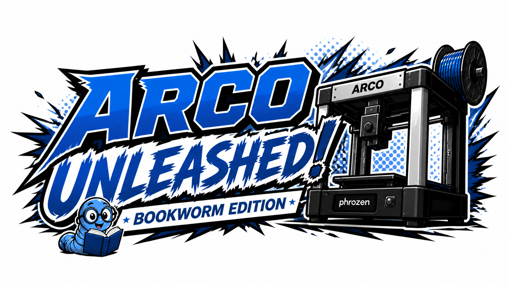
The illustrated long-form of the README’s 🟢 Flash & Run section. It takes a stock Phrozen Arco and moves it onto armbian-mkspi (Debian Bookworm, kernel 6.18) · Klipper v0.13 using the pre-built image. Follow it top to bottom — every screen you’ll see is pictured.
Two routes onto the printer, and this manual walks both. Steps 0 and 4–10 are shared; only the flashing differs: * Path A — direct self-flash (no teardown, no PC) — the running printer overwrites its own eMMC. ✅ Proven on hardware, but one shot, no net, and it gives you no chance to save the factory system. It replaces steps 1–3. * Path B — eMMC replacement / recovery (steps 1–3, below) — pull the eMMC and flash it on a PC. The proven path, the way to recover a bricked unit, and the only one that lets you keep a way back to stock.
Whichever you take, both meet again at Step 4.
⚠️ Hardware-specific: Phrozen Arco with MKS board (RK3328, STM32F407 + MKS_THR STM32F103), AP6212 WiFi. Not a generic Klipper kit. Working inside the printer means mains and electronics — power the machine off and unplug it before you open the housing. Use at your own risk (see the README disclaimer).
⚠️ Warranty: replacing the factory OS/firmware and opening the printer will very likely void your Phrozen warranty. Keep the original eMMC (or a backup image) so you can restore stock if you ever need to — Step 1 is the only moment that image can be made. Note that the eMMC alone is not the whole way back: Step 5 also reflashes both MCUs, so a full return to stock needs their v0.11 firmware too. That is what
revert-to-buster/is for.ℹ️ This project is not affiliated with Phrozen. Arco Unleashed is an independent, community-made project. It is not endorsed, supported or distributed by Phrozen, and Phrozen cannot be asked for support on a printer running it — if something is wrong, ask here, not them. Phrozen and Arco are the manufacturer’s trademarks and are used only to say which machine this fits.
At a glance:
| Step | What you do |
|---|---|
| 0 | Rescue the AMS server from the running printer (one SSH command) — not a full backup |
| A | Path A only — self-flash from the printer, then jump to 4 (replaces 1–3) |
| 1 | Path B — remove the eMMC module (and image it, if you want a way back) |
| 2 | Path B — flash the image to the eMMC (balenaEtcher) |
| 3 | Path B — first boot: WiFi portal + USB install (from your phone) |
| 4 | SSH in with PuTTY |
| 5 | Flash the MCUs (the one essential manual step) |
| 6 | The rest of the setup menu — backup/restore, guards, repair |
| 7 | Calibrate |
| 8 | Optional — AddOn features, Mainsail theme, verify |
| 9 | First print — OrcaSlicer Machine G-code |
| 10 | Optional — Unleashed × KAOS add-on |
🛑 Do Step 0 first — before you flash anything. The new system needs data (the AMS server
phrozen_master+~/hdlDat) that lives only on your original, still-running printer and is not in Phrozen’sArco_FW_V*.zip. The flash erases it for good. Collect it now (Step 0) while the old printer still boots — skip it and AMS detection hangs and the display won’t return home after calibration.
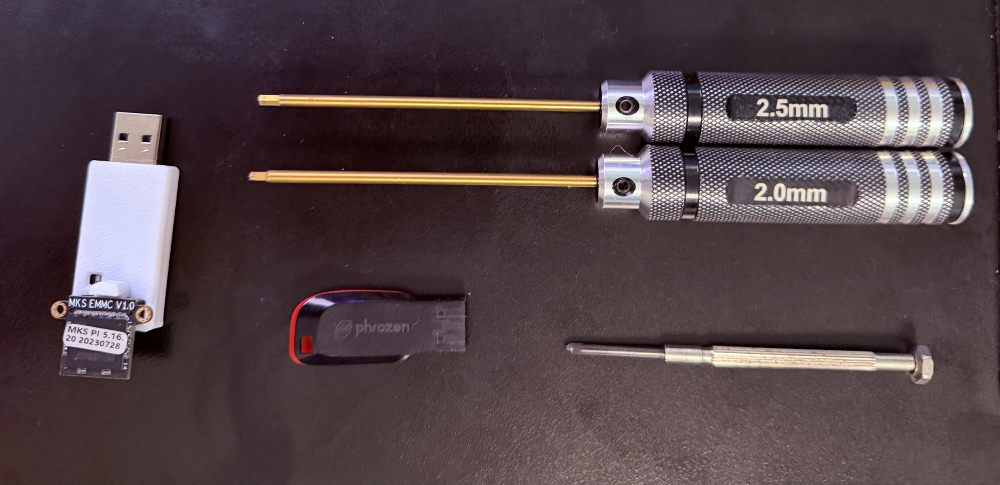
Tools (left→right above): a USB-to-eMMC adapter (the white MKS eMMC case), a 2.5 mm and 2.0 mm hex/Allen key (rear extruder cover + the printer’s lower housing cover), the FAT32 USB stick, and a small Phillips screwdriver (the eMMC’s retaining screws on the mainboard).
Taking path A? You still need the hex keys: path A skips the eMMC teardown, but every route ends at Step 5, which opens the toolhead to reach two buttons. Only the adapter and the Phillips screwdriver are path B-only.
A spare eMMC module (optional, and the same MKS V1.0 part) is worth considering on either path: flash the spare and the original stays a guaranteed way back to stock. See Step 1.
About the stick: the original Phrozen one is a good fit, but start it empty. The tools match their inputs by pattern (
Arco-Unleashed*.img.gz,Arco_FW_V*.zip) and take the first match, so an older firmware zip or a(1)copy left on it can win silently and install something you did not intend. Format it, then put on only what the table below lists.
Space — for the first install, put the printer somewhere you can work all the way around it, not in its usual corner. You will reach inside for the eMMC on the mainboard (underneath) and, in Step 5, open the toolhead itself to press two buttons on its board. Both are fiddly with the machine wedged against a wall, and neither is something you want to do twice.
Running a PentaShield (or any add-on panels)? Take at least the rear panel off before you start. Step 5 needs the two buttons inside the toolhead, and the panel is in the way of both the covers and your hands. Doing it up front saves interrupting the flash halfway through — see the toolhead button step.
Media & software — one FAT32 USB stick, ≥ 4 GB (the original Phrozen one is ideal). What you copy onto it depends on the path — the key difference is that path A carries the image on the stick, while path B writes the image onto the eMMC with balenaEtcher, so its stick only holds the first-boot files:
| File | Path A (self-flash) | Path B (this manual) | Where from |
|---|---|---|---|
Arco-Unleashed_bookworm_6.18.30.img.gz |
✅ | — → onto the eMMC | inside Arco-Unleashed-USB.zip |
…img.gz.sha256 +
…img.gz.rawsize |
✅ | — | Releases |
unleashed-selfflash.tar.gz +
prepare_unleashed_self_flash.sh |
✅ | ( ✅ ) — needed for Step 0b | Releases |
Arco_FW_V*.zip — optional, see
below |
( ✅ ) | ( ✅ ) | Phrozen — you download it |
arco-phrozen-ams.tar.gz |
✅ | ✅ | Step 0 (collect_data_arco.sh) |
optional wifi-seed.txt /
no_wifi.txt |
✅ | — | you create it (see selfflash/) |
When do you need
Arco_FW_V*.zip? Normally you don’t. Phrozen publishes the display module in their own public repository, and the printer offers to fetch it from there — you confirm once, it downloads, and the checksum is verified before anything is installed. Bring the zip if either of these applies to you: - the printer will have no internet while you set it up (a stick with the zip is the offline route), or - you want the PhrozenGo cloud app — it is only in Phrozen’s own package, not in the repository.Display and AMS firmware are not a reason: those are updated through Phrozen’s own USB firmware update, not from this stick.
The zip always wins: if one is on the stick, nothing is downloaded at all. Added, it looks like this — the same stick as in Step 0, with Phrozen’s package beside the AMS backup:
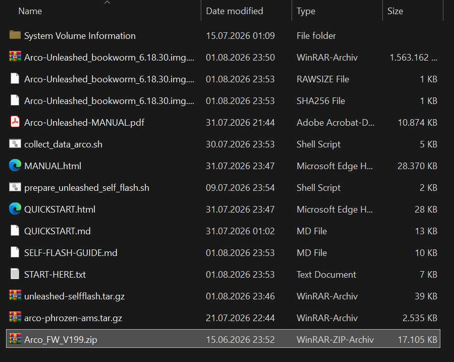
Nothing proprietary is bundled with this project. Phrozen’s module is either read from the zip you supply, or — only after you confirm — downloaded from Phrozen’s own public repository onto your printer. Nothing of Phrozen’s is hosted, mirrored or redistributed here. Path B additionally needs balenaEtcher on a PC plus the tools pictured above.
🛑 This is not a backup of your printer. It rescues two files that exist nowhere else — nothing more. Everything else on the printer (your calibration, uploaded G-code, settings, Phrozen’s own system) is erased by the flash and cannot be brought back afterwards.
💾 If you want a way back, make one first — see Step 0b. It copies the entire eMMC onto your USB stick as one file you can write back later, without opening the printer. Phrozen publish no stock image, so this is the only way to keep the machine you have today.
This is also the only moment it can be done. An image taken later, from Unleashed, restores Unleashed. The one that takes the printer back to Phrozen’s system has to be a copy of Phrozen’s system, and after the flash that system no longer exists here to copy. The setup menu’s b — going back to Buster needs exactly this file; without it, that road is closed.
Before you flash anything, grab data off the original printer
while it still boots. The AMS server
(phrozen_master + ~/hdlDat)
lives only in the original base OS — it is not
in Phrozen’s Arco_FW_V*.zip. The flash wipes it, and
without it AMS detection hangs and the display won’t return home after
calibration. There is no way to recover it later — so
do this now, on the original printer:
Copy collect_data_arco.sh (from
this repo) onto the FAT32 USB stick and plug it into the
printer.
SSH into the original printer (PuTTY on Windows,
ssh on Mac/Linux): Host = the printer’s
IP (from your router or the Phrozen display),
Port 22, login mks /
makerbase.
Run:
bash ~/printer_data/gcodes/USB/collect_data_arco.sh ~/printer_data/gcodes/USB(~/printer_data/gcodes/USB is where the Arco
auto-mounts the stick.)
If that command fails because the folder is empty, the stick did not auto-mount. Mount it yourself — to that same path, because the script and everything after it expect it there. Find the partition with
lsblk, then:sudo mkdir -p /home/mks/printer_data/gcodes/USB sudo mount /dev/sda1 /home/mks/printer_data/gcodes/USBOnly needed if the folder is empty — normally the Arco mounts the stick there by itself, on the stock system and on Unleashed alike.
It writes arco-phrozen-ams.tar.gz
onto the stick. On your PC, confirm the file is really
there — if it’s missing, re-insert the stick and run the
command again.
When you’re done the stick holds this — keep it, you’ll reuse the same stick in Step 3:
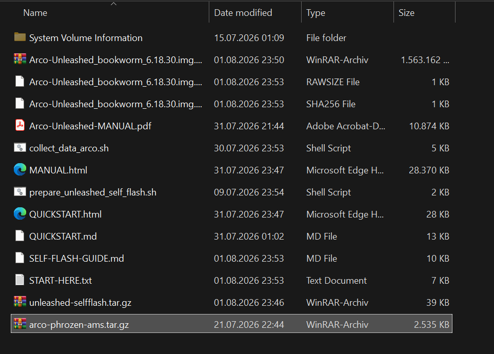
Everything above the highlighted line came out of
Arco-Unleashed-USB.zip, extracted to the
top level of the stick. The highlighted
arco-phrozen-ams.tar.gz is what Step 0
just produced — the one file no download and no Phrozen package can
replace. The new system re-installs it by itself on first boot.
This is the way back. Phrozen do not publish a stock
image, so once the eMMC is overwritten, the machine you have today is
gone unless you copied it first. This copies all of it
— every file, the partition table, the bootloader — onto your USB stick
as one arco-emmc-backup-*.img.gz, and it needs no teardown:
no screws, no eMMC removal, no PC.
It is entirely optional. Skip it if you have no intention of ever going back.
You need two things on that stick. First, room for the image — 8 GB or larger, plugged straight into the printer, never through a USB hub. Second, the self-flash tool itself:
| On the stick | From |
|---|---|
unleashed-selfflash.tar.gz |
inside Arco-Unleashed-USB.zip |
prepare_unleashed_self_flash.sh |
the same zip |
Why these, when you are flashing the eMMC externally? Because right now your printer is still running Phrozen’s original system, and none of this project’s files are on it yet. The backup tool has to come from the stick — that is the whole reason it ships as a standalone package that needs no installation. Path A users have both files on the stick anyway; on path B they are the one thing you have to add for this step.
⚠️ A FAT32 stick is not enough for this one. The backup is a single file, and FAT32 cannot hold a file of 4 GiB or more — a factory Arco typically lands around 5 GB. Format the stick as
ext4.Not exFAT: your printer is still running Phrozen’s original system at this point, and that kernel is older than mainline exFAT support, so the flasher cannot mount such a stick after the reboot. Not NTFS either, for the same reason.
ext4is the one that always works here — it is what the printer boots from, so the driver is guaranteed to be present. On the printer, with the stick plugged in:lsblk -o NAME,FSTYPE,SIZE,MOUNTPOINTFind your stick in that list — then, replacing
sdX1with its name, and reading it twice, because this erases the device completely:sudo umount /dev/sdX1; sudo mkfs.ext4 -L ARCOBK /dev/sdX1Windows cannot write ext4, so use a second stick for this and keep your FAT32 one for the files in Step 0. The tool measures first, tells you the estimate, and refuses to start on a stick it could not write to afterwards — you will not find this out halfway through. If you would rather not reformat anything, image the eMMC on a PC instead (path B, step 1).
On the printer:
sh ~/printer_data/gcodes/USB/prepare_unleashed_self_flash.sh
sudo bash ~/selfflash/install-unleashed.sh --backupIt measures the eMMC (about a minute, silent), tells you how big the backup will be and whether the stick has room, then asks. Say yes and it reboots, images the eMMC before the system starts — the only moment nothing is using it, which is what makes the copy trustworthy — and shows its progress on the display. Nothing on the printer is written to or changed, and pulling the stick cancels it.
When it finishes it says so on the display, holds that screen for a moment and then carries on booting on its own — no power-cycle, no restart. Nothing on the printer was touched, so there is nothing to restart for. Take the stick out whenever you like. On it you will find:
| File | What it is |
|---|---|
arco-emmc-backup-stock.img.gz |
the image itself — -stock when taken
from Phrozen’s system, -unleashed when
taken from this one |
…img.gz.sha256 |
its checksum — the restore refuses without it |
…img.gz.rawsize |
its uncompressed length, used to reject an image that cannot fit |
Why the name says which system it holds. An image of Phrozen’s original system cannot be made again once the printer has been migrated, and Phrozen publish none. With a single name, the next two routine backups would have pushed it aside and then deleted it. Each kind now rotates on its own, so an Unleashed backup can never displace a stock one — and the restore menu can tell you what each file is instead of asking you to remember. Backups made by older versions keep their plain name and still work.
Measured on a printer with a 32 GB eMMC: about half an hour, and the file came out at 2.3 GB. A stock 8 GB eMMC is proportionally quicker and smaller.
🔒 Keep it to yourself. It is a byte-for-byte copy of your printer, so it contains your WiFi password, your SSH keys and any API tokens on the machine — and, taken from a factory printer, Phrozen’s own software, licensed to you. Never post or share it.
🔌 No USB hub, for this or for flashing. Put the stick directly in the printer. A hub is the most common reason a file copies fine and then reads back different, which surfaces much later as a checksum mismatch. And if you ever see CRC or I/O errors in the log, stop changing settings — that is the stick failing, or one this printer cannot drive. Use another, preferably a plain USB 2.0 one.
To write it back later — the ordinary flash, pointed at your own file instead of a release:
sudo bash ~/selfflash/install-unleashed.sh --arm --image /path/to/arco-emmc-backup-stock.img.gzIt verifies the checksum, refuses if the image cannot fit this printer’s eMMC, and skips the WiFi and first-boot-file steps — a restore is not an install, and your image already carries both. Restoring a 32 GB image takes appreciably longer than a normal flash, because it writes the whole eMMC.
It runs once per arming. Arming writes a marker onto that stick and the backup consumes it before it starts, so it fires exactly once, for that stick. Run the command again for another one — including after a failed attempt, where the marker is spent either way.
Once Arco Unleashed is installed, both halves are in the setup menu under i) WHOLE SYSTEM: save / restore, which lists the images on your stick and hands the chosen one to the same flasher.
No teardown, no PC: the running printer overwrites its
own eMMC, streaming the image from the USB stick. ✅
Proven on hardware — but one shot, no
net: once the write begins, a failure is recovered with Steps
1–2 below. If you already own an eMMC adapter, path B stays the safer
choice. Full detail: selfflash/README.md.
Prefer path B? Skip ahead to Step 1.
🛑 Path A gives you no chance to save the factory system. It never removes the eMMC and never touches a PC, so the stock Buster install is overwritten in place and cannot be imaged first. If you may ever want to go back to stock, take path B and make the dump in Step 1.
Prepare the stick. On the same FAT32 stick as Step
0, also put: the image (.img.gz +
.sha256 + .rawsize),
unleashed-selfflash.tar.gz and
prepare_unleashed_self_flash.sh — all from
the release. Phrozen’s Arco_FW_V*.zip only if one of the
two cases above applies to you; the flasher says which files it found
before it arms anything.
WiFi (recommended — the printer must come online
for the SSH MCU-flash in Step 5): add nothing and
it live-captures the network the printer already uses
(known-good, keeps its country), or create a
wifi-seed.txt:
SSID=YourNetworkName
PSK=YourWiFiPassword
COUNTRY=US(plain text, no quotes, a 2.4 GHz network.
COUNTRY is your 2-letter WiFi
region code — US, CA, GB, AU, …; set it to
yours, the region must match your router or the printer may not
join.) A wrong or missing WiFi falls through to the first-boot phone
portal (where you pick your network and your country
from dropdowns). With WiFi details seeded it allows about 90
seconds for the radio to come up, associate and get an address
before falling back to the portal; with none configured it goes to the
portal almost at once. A network that connects returns in a second or
two, so a correct WiFi costs no real delay. If the portal does not
appear either, you can still hand the printer your network from the USB
stick afterwards — see Step 3.
1) Unpack the tool, then look before you leap. SSH
in as mks (Step
4 shows how). The stick auto-mounts at
~/printer_data/gcodes/USB (on a stock printer and on
Unleashed); unpack the tool from there and run the inspect pass, which
changes nothing:
cd ~/printer_data/gcodes/USB # where the USB stick auto-mounts
sh prepare_unleashed_self_flash.sh # unpacks the tool to ~/selfflash
sudo bash ~/selfflash/install-unleashed.sh # inspect onlyIf
~/printer_data/gcodes/USBis empty, the stick didn’t auto-mount. Mount it to that same path — then the commands above work unchanged (lsblktells you the partition):sudo mkdir -p /home/mks/printer_data/gcodes/USB sudo mount /dev/sda1 /home/mks/printer_data/gcodes/USB
2) Arm it. --arm prints the disclaimer,
verifies the image’s checksum against its .sha256, and
names the target eMMC — read that line and make sure it is the device
you mean:
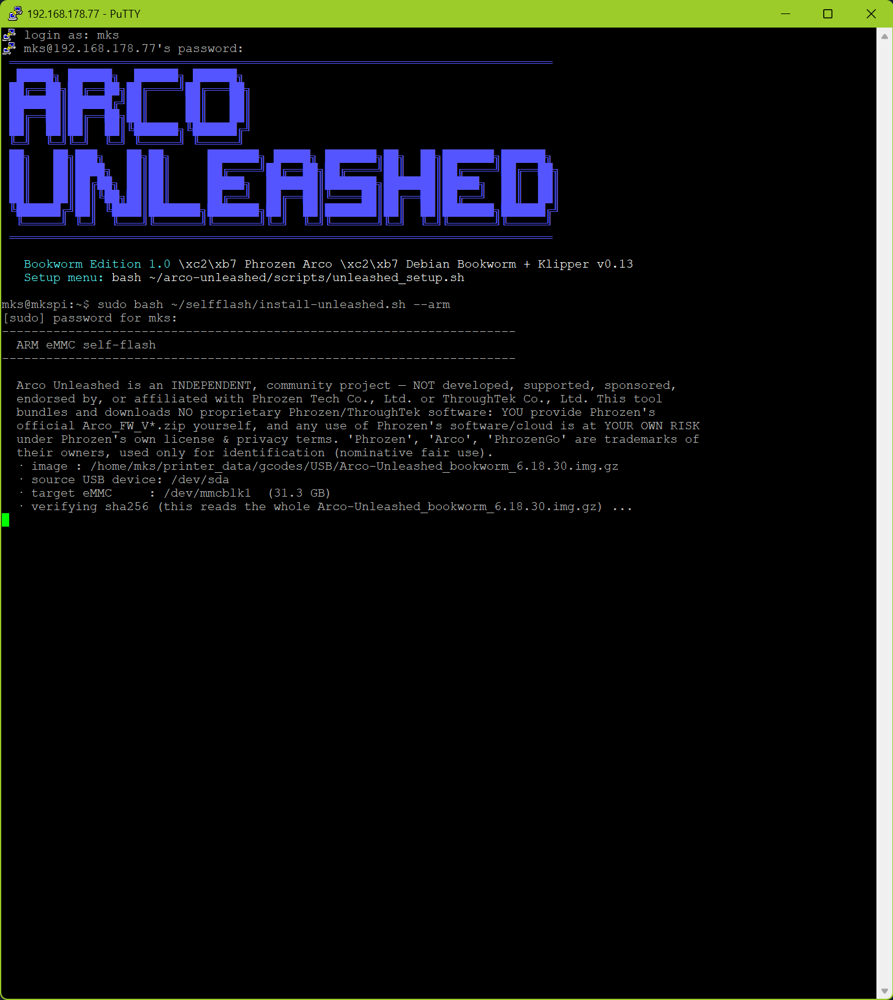
Then it makes you type yes and the
exact device name. Two deliberate speed bumps — there is no undo:
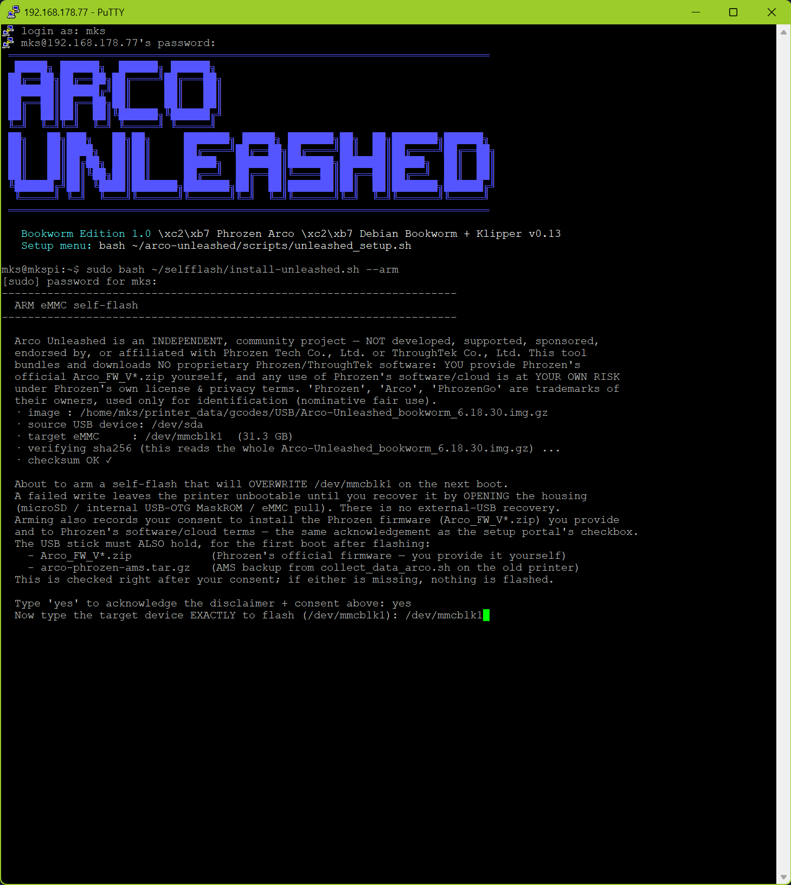
It checks the stick for the files the first boot
needs, then shows the WiFi it will use (live-captured
from the running system, or from your wifi-seed.txt) and
asks you to confirm it — decline, and it offers the
first-boot portal instead. Then it rebuilds the initramfs and arms the
flash:
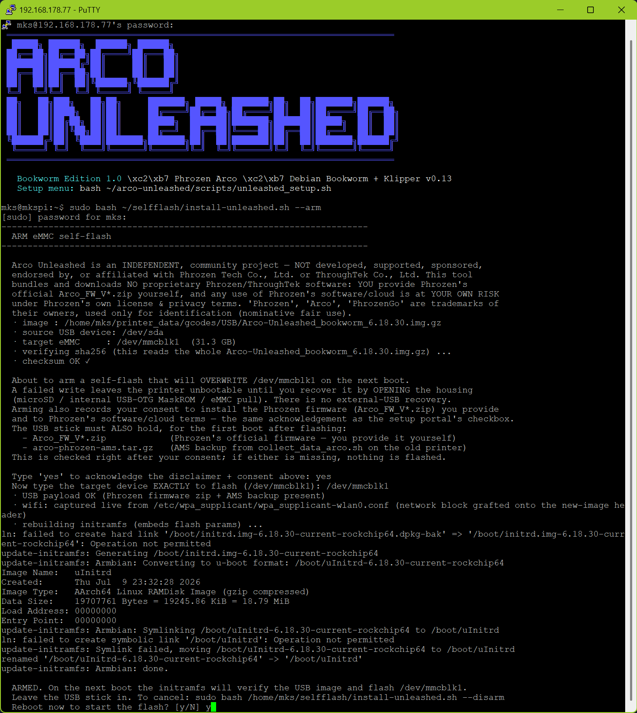
The screenshot predates the WiFi-confirm prompt; current builds print the captured/seeded SSID and ask you to confirm it (or fall back to the portal) right before arming.
The two
ln: failed to create … Operation not permittedlines in that screenshot were harmless:/bootis FAT32, which has neither hard links nor symlinks, soupdate-initramfssimply falls back to copying. Current builds filter those lines out — the screenshot predates that.
3) Reboot. Answer y. Your SSH session
drops immediately. That is the reboot, not a fault:
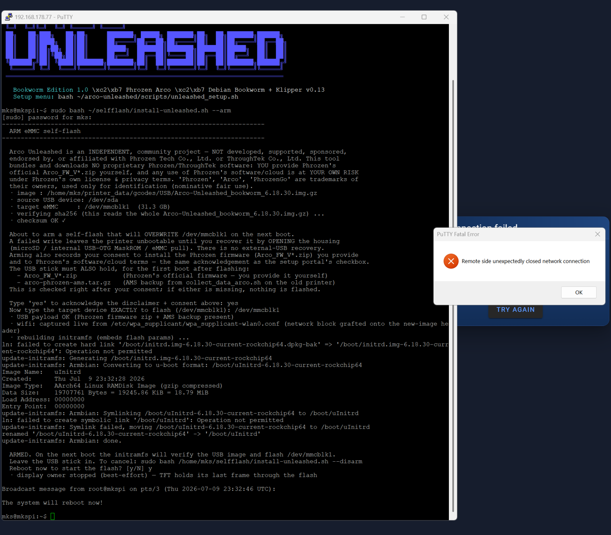
4) Watch the display. Three named steps run in order — check → write → verify. Only the write phase tells you not to power off, because only then is anything actually being overwritten:
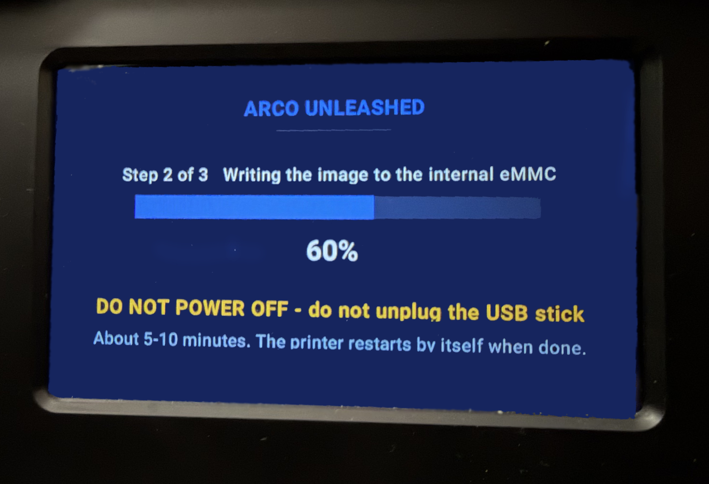
When the write and verify finish, the display shows “Done — Restarting now” and reminds you to keep the stick plugged in while the printer finishes setup:
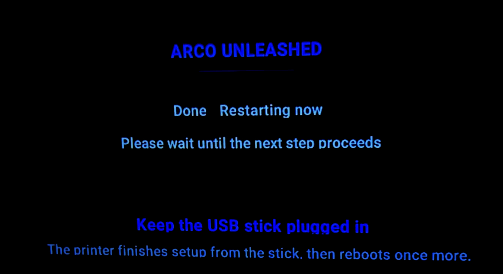
Leave the USB stick plugged in. The printer reboots itself, brings up the WiFi you seeded and installs Phrozen’s parts from it, rebooting once more. Then continue at Step 4 — Steps 1–3 do not apply to you.
What the display shows on that first boot — after the Phrozen install it shows “Update complete — wait for restart…”, restarts itself once a few seconds later, and then settles on a “Notice — Error occurred” screen. That last one is expected, not a fault — Klipper can’t start until the MCUs are flashed, and no amount of restarting/power-cycling clears it. Wait for the settled “Error occurred” screen — that means the automatic restart is done — then connect over SSH for Step 5 (Flash the MCUs). Don’t SSH before that (the auto-restart would drop the session), and don’t try to set up on the display.
You should not see a Phrozen first-time setup wizard (language → name → chute calibration → homing). It is switched off deliberately: it ends in a homing move, which cannot finish before Step 5, so it is a dead end. If one ever does appear, don’t work through it — power-cycle once or twice and it clears itself.
If that WiFi doesn’t connect (wrong password, changed/5 GHz network, or you chose
no_wifi.txt), the printer falls back to its setup portal on the first boot — joinArco-Unleashed-Setupfrom a phone (192.168.4.1) and enter your network — it gives up on the seeded WiFi after about 90 seconds, so do not pull the plug before that. This matters here because until the MCUs are flashed (Step 5) the display shows an MCU error and cannot set WiFi itself. If even the portal fails to come up, thewifi-seed.txtrescue in Step 3 still gets the printer onto your network.
🚪 If it goes wrong before the write begins — image missing, checksum mismatch, or the flasher hangs — pull the USB stick and power-cycle. With no image on the stick the flasher stands down and your existing system boots normally. Once the write has begun, only Steps 1–2 can recover the printer.
The flash stays armed, and that is how you retry: put a good image back on the stick, power-cycle, and it simply tries again. But if you stop here and carry on using the old system, cancel it first — otherwise the next boot with that image on a plugged-in stick overwrites the eMMC without asking:
sudo bash ~/selfflash/install-unleashed.sh --disarm
The proven route: pull the eMMC, flash the image onto it with balenaEtcher on a PC, put it back. This is also how you recover a printer if a path-A self-flash ever fails. Steps 1–3 below are this path; then both paths meet again at Step 4.
Took path A above? The eMMC is already flashed — skip straight to Step 4.
🛑 This is your only chance to save the factory system. The printer has one eMMC. Step 2 writes over it, and the stock Buster install on it is gone for good — Phrozen do not publish an image of it. Two ways to keep a road back, and you must choose now:
- Keep the original module. Fit a spare eMMC (they are cheap and the same MKS V1.0 part), flash that in Step 2, and put the original in a drawer. Refitting it is then a two-minute job.
- Or image it before you overwrite it. With the module in the adapter, take a full dump first: Windows — Win32DiskImager, the Read button (balenaEtcher cannot do this; its Clone is drive-to-drive and produces no file). Mac/Linux —
sudo dd if=/dev/sdX of=buster.img bs=4M, withsdXfromlsblk. It dumps the whole ~31 GB, so have the space free and expect it to take a while.This is not precaution for its own sake: the kit’s own way back,
revert-to-buster/, lists as its first requirement “YOUR OWN buster.img — a 1:1 full-disk dump of a WORKING Buster eMMC”. This step is the only moment it can be made.
Power the printer off and unplug it. Then open the lower housing cover — undo the circled bottom screws with the hex key:
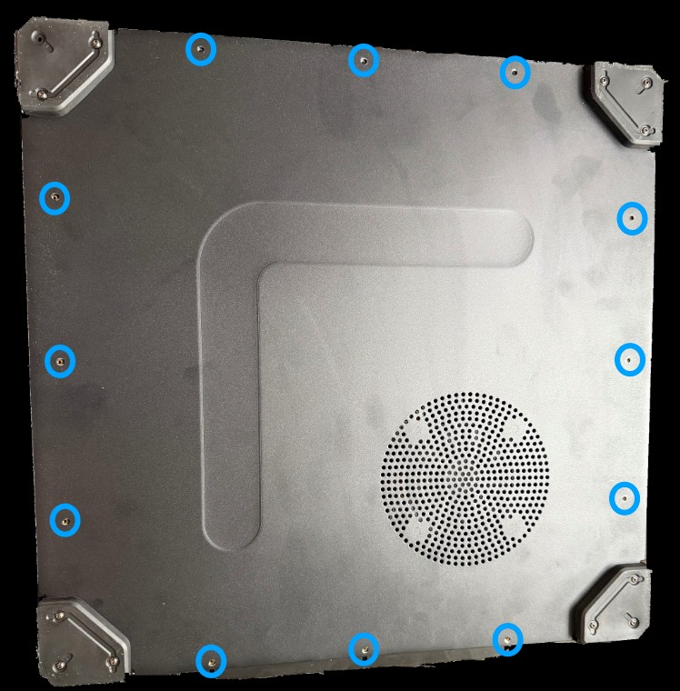
On the Phrozen Bumblebee mainboard, find the MKS eMMC V1.0 module (labelled MKS PI …). It’s held by two Phillips screws (arrows). Undo them:
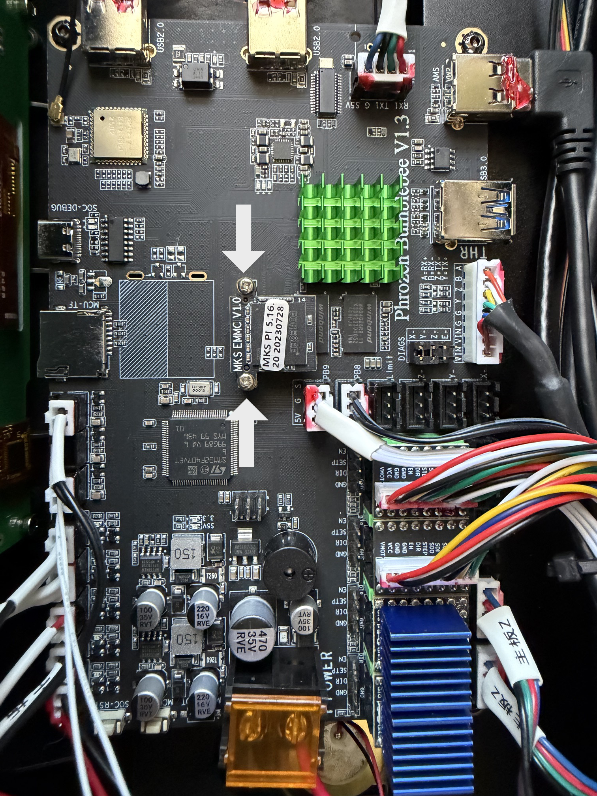
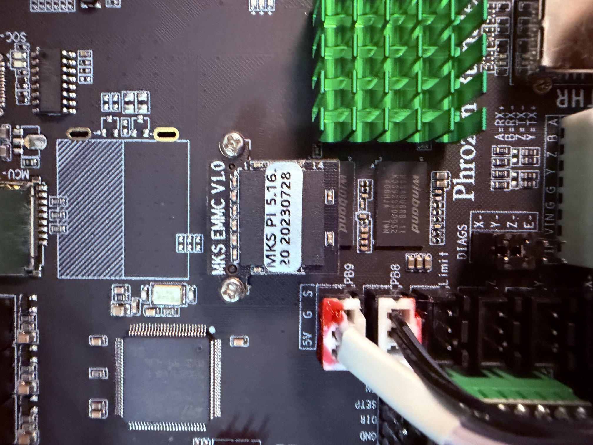
Lift the module out and slide it into the USB-to-eMMC adapter:
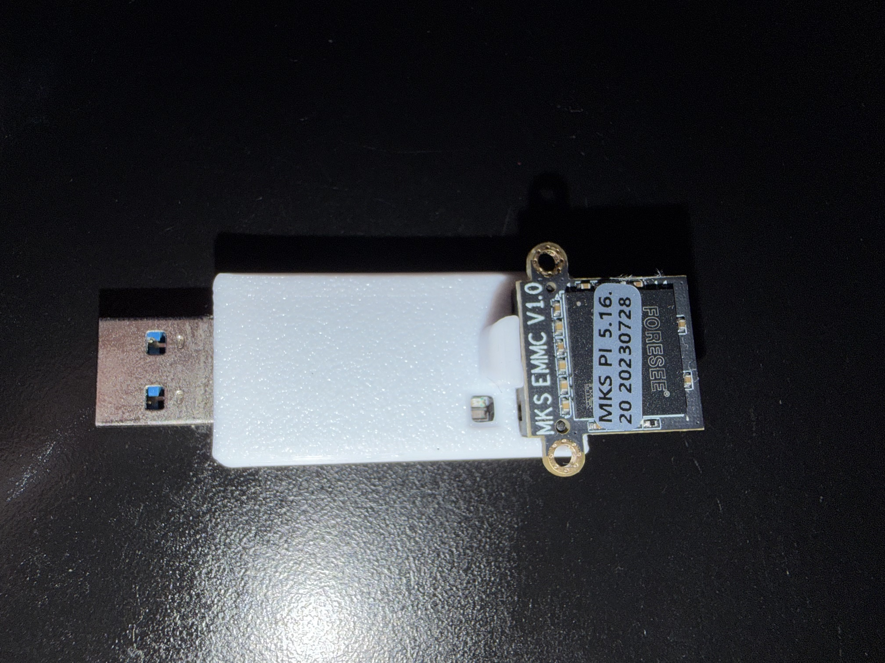
Plug the adapter into your PC and open balenaEtcher. (Use the GUI — no WSL needed.)
2.1 — Flash from file: click Flash from
file and pick the Arco Unleashed .img (unzip the
.img.gz first if your Etcher can’t read .gz
directly).
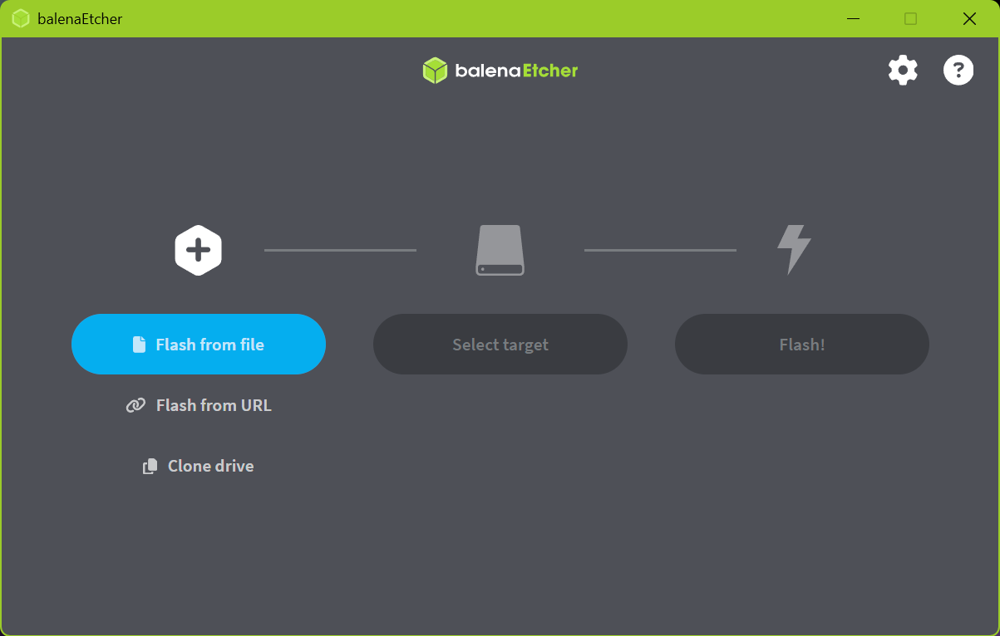
2.2 — Select target: click Select target.
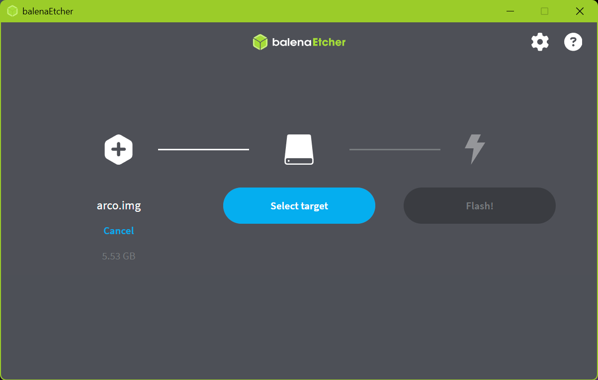
2.3 — Pick the right drive: choose the eMMC (here the ~31 GB “Generic STORAGE … USB Device”). ⚠️ Do not pick your big system disk (the 500 GB “Large drive” is flagged for a reason) — Etcher erases whatever you select.
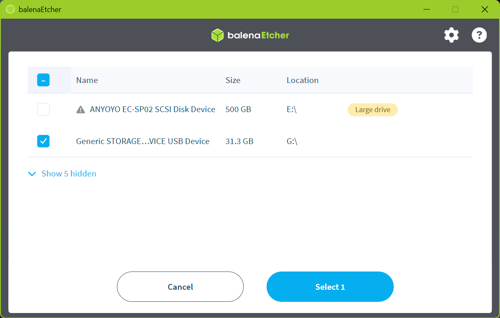
2.4 — Flash! Confirm the file and target, then click Flash!
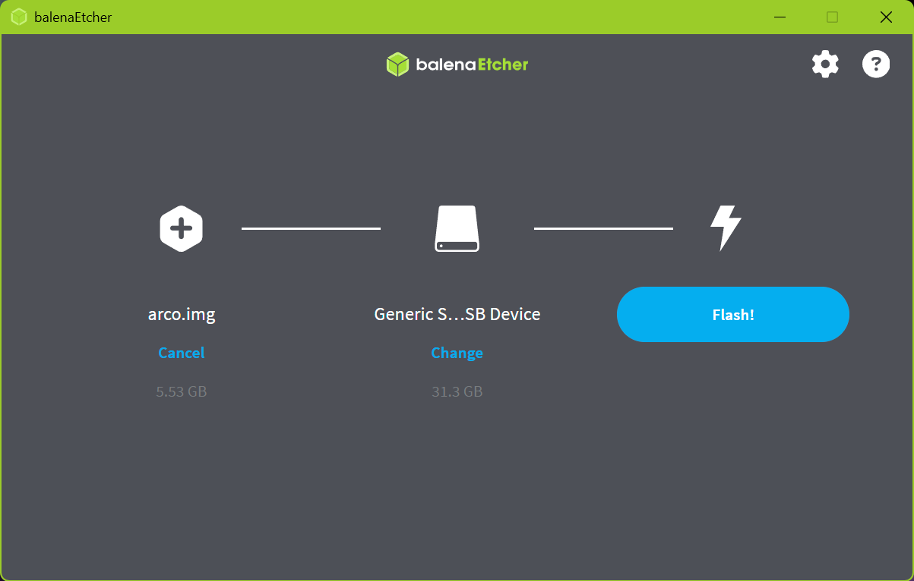
2.5 — Ignore the Windows “format disk” popup. Windows can’t read the Linux partitions and will offer to format the drive — click Cancel / Abbrechen. Never click Format disk.
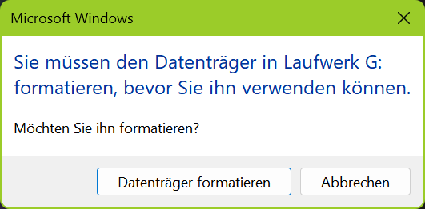
2.6 — Done. When Etcher shows Flash Completed!, safely eject the adapter.
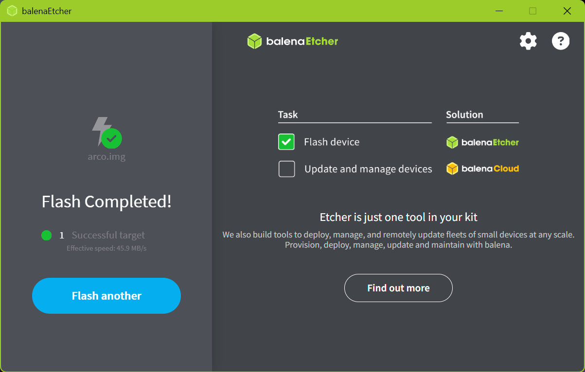
Put the eMMC back into the mainboard (re-fit the two screws) and close the housing.
The public image ships without Phrozen’s software, so the first boot brings up a WiFi setup portal, then installs Phrozen’s module — from your stick if a zip is on it, otherwise by fetching it from Phrozen’s own repository after you have confirmed.
3.1 — Prepare the USB stick. On the FAT32 stick you
need the arco-phrozen-ams.tar.gz from Step
0 (see the picture there). Add Phrozen’s
Arco_FW_V*.zip beside it only if the printer will
have no internet during setup, or if you want PhrozenGo
— see the note under What you need.
3.2 — Plug the stick in, then connect.
Power the printer on and insert the prepared USB stick into the
printer’s USB port now — before you press Connect. On your
phone, join the
Arco-Unleashed-Setup Wi-Fi; the captive
portal pops up (192.168.4.1). Pick your network, enter the
password, select your country (WiFi region),
tick the consent box, and press
Connect. The printer reboots onto your WiFi.
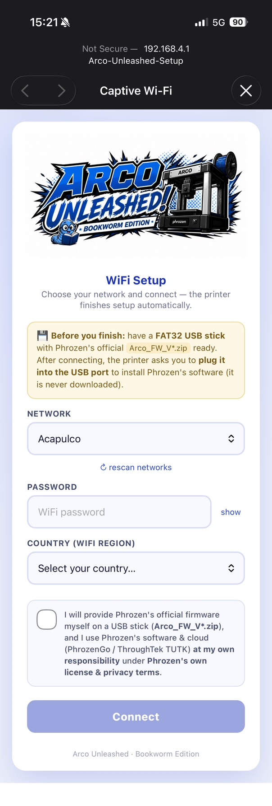
No hotspot showing? Give it ~90 seconds first — that is how long the printer tries any seeded WiFi before it gives up and raises the hotspot. If neither the printer nor the hotspot appears, you can hand it the network from the USB stick: create
wifi-seed.txtin the stick’s top-level folder with the three linesSSID=/PSK=/COUNTRY=, put the stick back in and power-cycle. This stage runs again on every boot until the Phrozen install finishes, so it picks the file up and joins your network. (Beware Notepad saving it aswifi-seed.txt.txt; the network must be 2.4 GHz.)Each
wifi-seed.txtis applied once on purpose — a later boot must not overwrite a network you set through the portal in the meantime — and is renamedwifi-seed.txt.appliedso you can see it was picked up. “Once” is judged by the file’s contents, recorded on the printer, not by its timestamp: FAT sticks record local time and Linux reads it as UTC, so timestamps were unusable. To try again the details must genuinely differ (a corrected password); rewriting the identical file changes nothing.
Older images do not read wifi-seed.txt yet. There the
rescue takes two files on the stick — note the leading
dots:
.arco-skip-portal — an empty file
.arco-wifi.conf — a complete wpa_supplicant
config:
ctrl_interface=/run/wpa_supplicant
update_config=1
country=US
network={
ssid="YourNetworkName"
psk="YourWiFiPassword"
}3.3 — USB install. After the reboot the install runs from that stick and the display shows a progress bar (Reading → Installing → Patching):
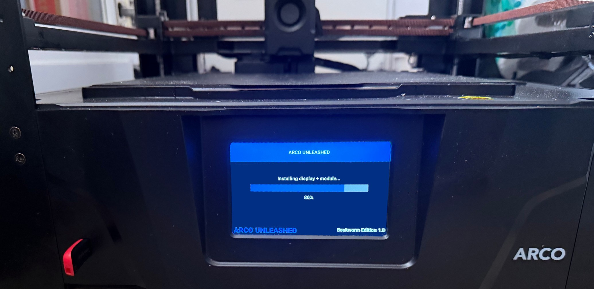
3.4 — It restarts itself. At 100 % the display shows “Update complete — wait for restart…” and the printer reboots on its own a few seconds later. Let it. Don’t switch it off: the filesystem batches writes for up to two minutes, so pulling the power here can cost you most of the install.
Phrozen’s own “Update Complete — restart printer manually” screen no longer appears, and that is deliberate. It is the same screen that arms a one-time setup wizard, and on a printer whose MCUs aren’t flashed yet that wizard ends in a homing move that never finishes — a dead end you can’t click out of. Both are switched off; the screen above replaces them, and the reboot is automatic.
After the restart you can remove the stick. (The full-card rootfs resize also happens here; SSH host keys are generated on the first boot.) Once the MCUs are flashed in Step 5, the normal Phrozen display WiFi screen handles future network changes.
What you see now is “Notice — Error occurred”, and that is expected. Klipper cannot start yet, because the MCUs still carry the old firmware — so the display settles on an error popup. The install did not fail, and restarting or power-cycling will not clear it. Wait for that settled screen (it means the automatic restart has finished), then go on to Step 4 and flash the MCUs in Step 5.
Skip any built-in “print test” the first-run or a factory reset offers — the bundled test file was compiled for the old Klipper and can’t run on v0.13. Your first print comes from OrcaSlicer later.
Display firmware (.tft). This project never updates the touch panel. If you install from Phrozen’s zip, that package happens to carry the panel firmware and Phrozen’s own updater may flash it when the versions differ; the download route carries none, and nothing about the display changes. If your printer was on an older Phrozen firmware and the display looks off, run one official Phrozen USB firmware update once — that is how panel firmware is meant to be updated, and it is safe here: the self-heal guards re-apply the v0.13 Klipper patches automatically on the next boot. (This applies to both install paths.)
22, Connection type
SSH → Open (accept the host-key
warning on first connect).mks / password
makerbase. You’re greeted by the Arco
Unleashed banner:
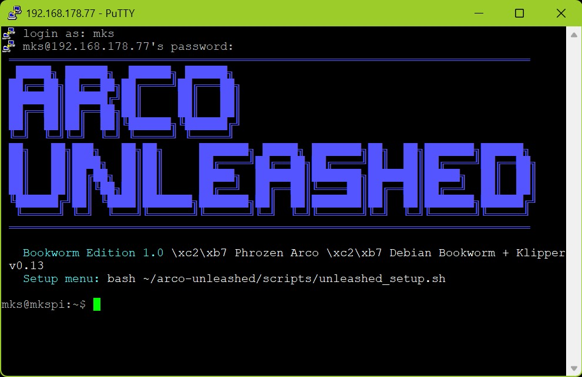
Open the setup menu — everything from here on runs from it:
bash ~/arco-unleashed/scripts/unleashed_setup.sh
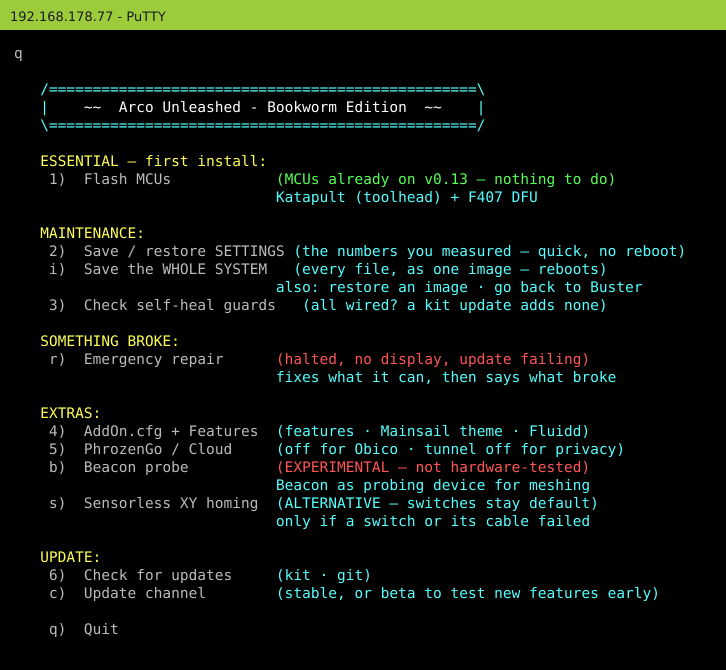
Take 1 — Flash MCUs. It is the only item that is not optional, which is why it does not wait until you have read the rest of the menu; the tour of everything else is Step 6.
First boot did everything else automatically. The
one thing you must still do by hand: the host now runs
Klipper v0.13, but your printer’s MCUs still carry the
old firmware — flash them or Klipper can’t talk to them
(mcu: Unable to connect /
Command format mismatch).
Until you do this, the display settles on a “Notice — Error occurred” popup and Klipper stays in an error state. That is expected, not a fault — tapping Confirm/Restart just reboots into the same screen, because the display cannot recover from an MCU-firmware mismatch on its own. Don’t set anything up on the display — the fix is the SSH MCU-flash below (this is why WiFi/SSH access matters after a self-flash).
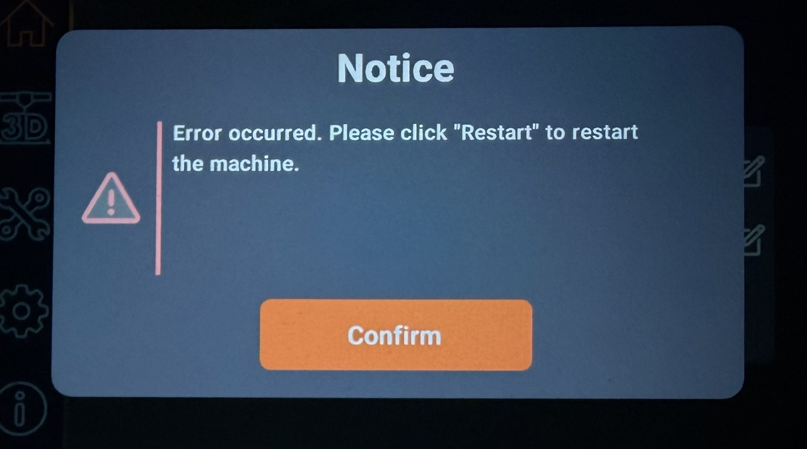
You are now in the Flash MCUs submenu. Flash all three in one go, or one at a time — all three have to end up flashed:
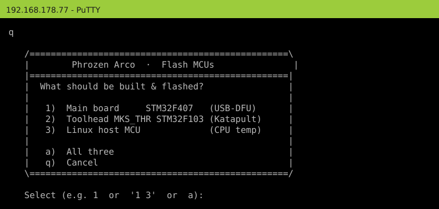
1) Main board — STM32F407 (USB-DFU) — flashes
automatically, no buttons. It also reads your
board’s chip id before flashing and writes it into
printer_MCU.cfg for you (the id is burned into the
chip and survives the flash).
3) Linux host MCU (CPU temp) — flashes automatically, no buttons.
2) Toolhead — MKS_THR STM32F103 (Katapult) — the
only one that needs a hands-on button step, and only
for its one-time Katapult install. Read that section before
you pick 2: it needs the toolhead covers off
and the printer running, and the script first offers
[i]nstall Katapult, then fetches packages and builds the
firmware — several minutes before it asks for the buttons. Do not pull
the power while the script or a DFU write is in flight.
The Katapult build configures itself from a setting the kit carries for this toolhead. If it ever opens a configuration menu instead, that setting was missing or a Katapult update renamed something — the script prints which value disagreed and what to set it to.
The buttons sit inside the toolhead, so two covers come off first — power the printer off and unplug it for the teardown only. The flash itself needs the printer running, so you will switch it back on before you touch a button.
PentaShield or other add-on panels fitted? Remove at least the rear panel now. The toolhead’s back cover and its four screws are not reachable past it, and you need both hands free at the printhead. Move the toolhead to a comfortable position by hand first — the motors are off.
1) Front cover. Take it off — but it is still wired: unplug the fan before you set it aside.
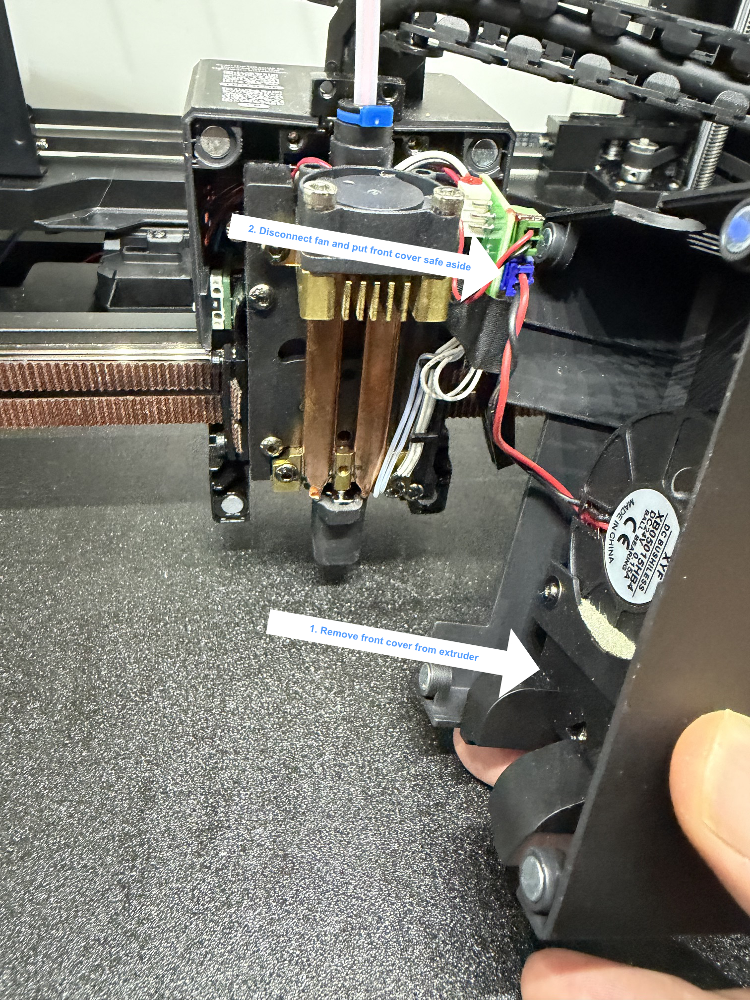
2) Back cover — four screws. Two on top, seen from behind the toolhead:
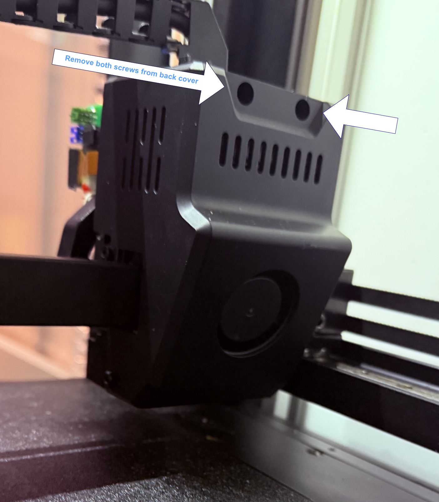
…and one low on each side — left, then right:
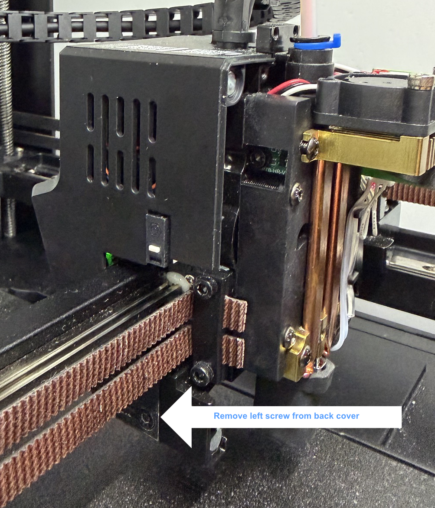
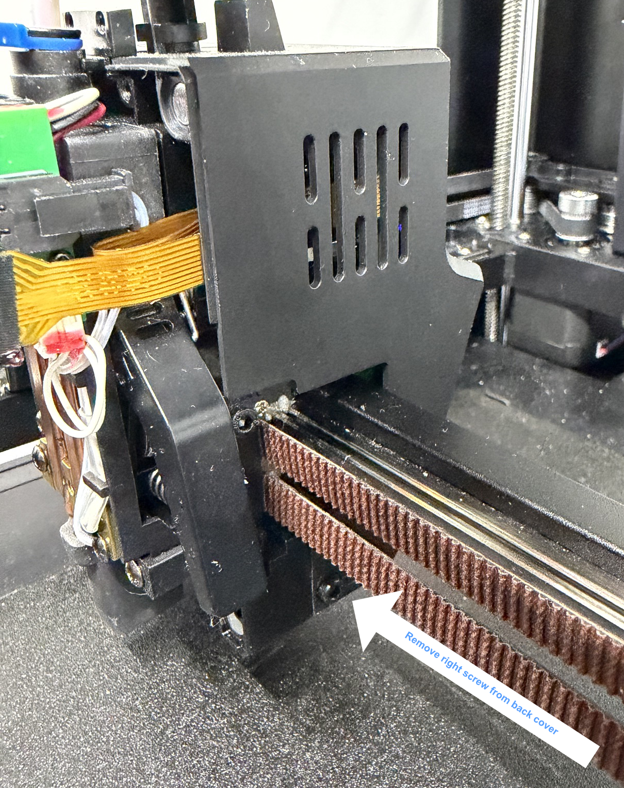
⚠️ Two things that catch people here.
The two screws on top drop backwards. As the last thread lets go they tip away from you — straight down the purge chute, where you will not get them back without taking more of the printer apart. Hold a finger behind each one as you loosen it, or lay a rag over the chute opening before you start.
The back cover is still attached on the right. A ribbon cable runs to it, and it is short. Ease the cover away from the left first and swing it open like a door rather than pulling it straight back — pulling is what tears the cable or its connector, and that is not a five-minute repair.
3) Power back up and get the script waiting. Plug in, switch on, wait for the boot, connect with PuTTY again (Step 4) and run:
bash ~/arco-unleashed/scripts/unleashed_setup.sh→ 1 (Flash MCUs) → the toolhead F103. The toolhead stays
open from here: the flasher stops Klipper, so nothing homes and nothing
heats — just leave the part-cooling fan unplugged until the covers go
back on. Work through the prompts until the script says it is waiting
for you to put the toolhead into its bootloader. That prompt is
where the button procedure below belongs — the buttons do
nothing before it, because an unpowered board cannot reset and there
would be nothing listening.
4) The board is now exposed. On the toolhead board (Phrozen-A V1.5), find the two buttons labelled RESET and BOOT:
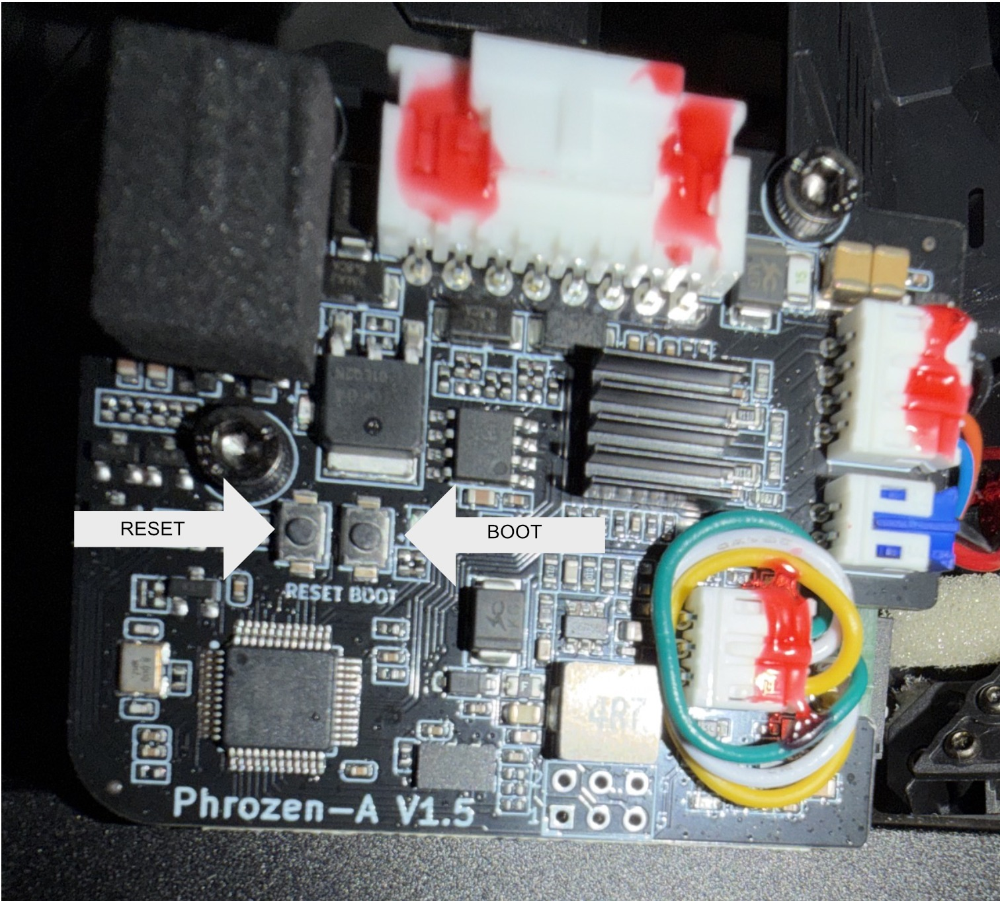
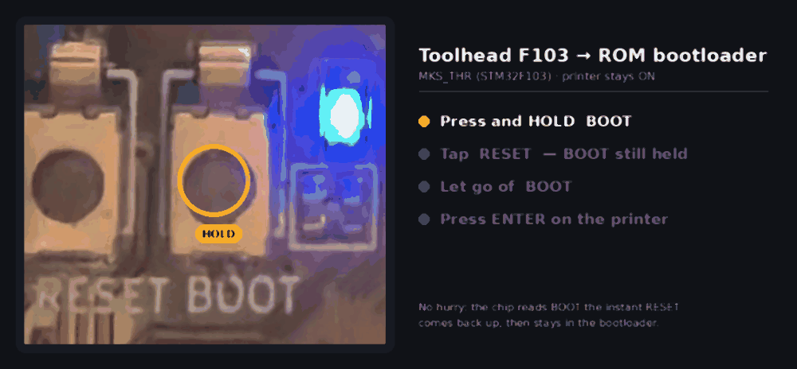
Procedure: 1. Press & hold BOOT. 2. Tap RESET — press and release it — while BOOT is still held. 3. Let go of BOOT. 4. Press ENTER at the waiting prompt. Take your time. 5. Wait until the flash runs through (~40 s at 9600 baud, after a mass-erase).
There is no countdown. One instant decides it, and it is not one you can miss by being slow: the chip reads BOOT the moment RESET comes back up — ST documents it as latched on the fourth rising edge of SYSCLK after reset release, half a microsecond in. Hold BOOT before that and it is in the bootloader; afterwards BOOT does nothing, and it stays there until something resets it again. The old “~3 second window” cannot have been true of this procedure anyway: step 5 alone transfers ~40 KB at 9600 baud, so the session lasts about a minute. If the bootloader gave up after three seconds, this step could never have worked once.
Tip: after the one-time Katapult install, future F103 flashes run over the same serial link without the button dance (Katapult keeps it flashable).
Nothing to do with Arco Unleashed — it is how the STM32F103 starts up.
stm32flash talks to — is selected only by the
BOOT0 pin at reset. Unlike newer STM32 families it has no
nBOOT_SEL option byte that software could set to choose it.
(ST reference manual RM0008.)src/stm32/stm32f4.c
ends bootloader_request() with dfu_reboot() —
which is exactly why the main board flashes with no buttons at all. The
F103 path, src/stm32/stm32f1.c, has no such call. It can
only hand off to a bootloader that is already in flash
(Katapult, HID, stm32duino). A stock board has none, so the request does
nothing. In other words: to install Katapult in software you would
already need Katapult.1) Power-cycle. Full power off (~10 s), then on — a reboot is not enough here. Freshly flashed MCUs only start their new firmware after a real power cut, which is why the flasher deliberately leaves Klipper stopped: the power-cycle brings it up cleanly.
2) Check. Open Mainsail in a
browser — http://<printer-ip>/ (or
:81), the same IP you gave PuTTY in Step
4. It should come up ready, with no MCU error, and the
display’s Notice — Error occurred popup is gone too. That’s
Step 5 done.
mcu: Unable to connect — the chip id
Every STM32F407 carries a unique chip id, so its
/dev/serial/by-id/usb-Klipper_stm32f407xx_… path is
different on every board — which is why the image ships a
CHANGE-your-chip-id placeholder instead of an id that could
only ever match one printer. The flasher normally fills it in for you:
it reads the id from your running board before putting
it into DFU, and the id survives the flash because it is burned into the
chip.
That read only fails if the board was already in DFU when you started (you pressed BOOT0, or an earlier attempt left it there) — a DFU device doesn’t announce a Klipper serial. Then the placeholder is still in the config. Fix it in one command, with the printer powered on and running its new firmware:
bash ~/arco-unleashed/scripts/set-mcu-serial.sh
sudo systemctl restart klipperWith the MCUs flashed, the printer is complete — everything below is optional. The power-cycle at the end of Step 5 ended your SSH session. Give the printer a minute to finish booting, connect again as in Step 4, and re-open the menu — you can do this at any time, from now on:
bash ~/arco-unleashed/scripts/unleashed_setup.shThis is what it has to offer.
The menu groups it: ESSENTIAL (1 — Flash MCUs, done), MAINTENANCE (2 — backup / restore your settings · 3 — check the self-heal guards), SOMETHING BROKE (r — emergency repair), EXTRAS (4 — AddOn.cfg + features · 5 — PhrozenGo/Cloud · b — Beacon · s — sensorless XY), UPDATE (6 — check GitHub).
2 — Backup / restore settings covers the one thing
no guard can do for you: guessing back numbers your machine measured —
worth running once you have calibrated (Step 7), since
that is when those numbers first exist. It saves your printer
configuration and calibration, the web interface’s own settings (theme,
presets, macro groups, history — none of which live in
printer.cfg), your WiFi and the phrozen_dev module, and
puts them back on request. It can also write the backup to a USB
stick, which is the copy that survives a reflash — the local
one sits on the very eMMC it is protecting.
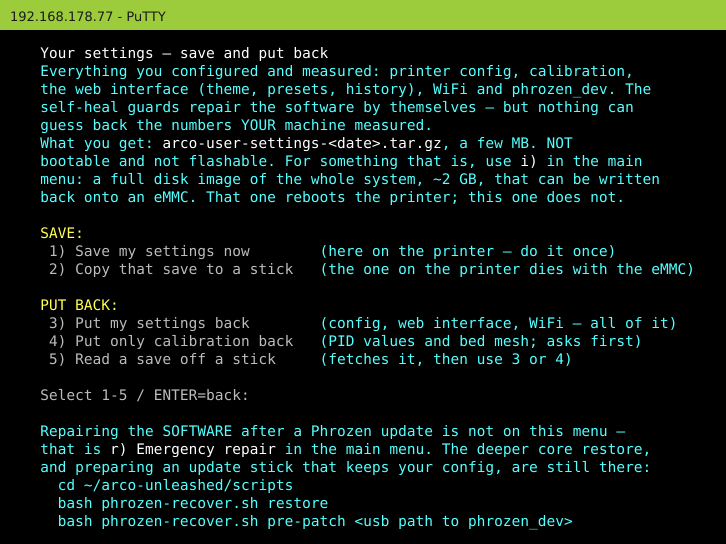
i — WHOLE SYSTEM: save / restore is the other kind of backup, and the two are easy to confuse, so the screens say what each one produces. Entry 2 above writes an archive of your settings, a few MB, which cannot be flashed and will not revive a printer that no longer boots. This one writes a bootable disk image of the entire eMMC — every file, the partition table, the bootloader — that can be written back. It reboots to do it, images the eMMC before the system starts, and comes back on its own. The same entry restores: it lists the images on your stick and hands the chosen one to the flasher, which still asks for the target device to be typed out in full. Full walk-through in Step 0b.
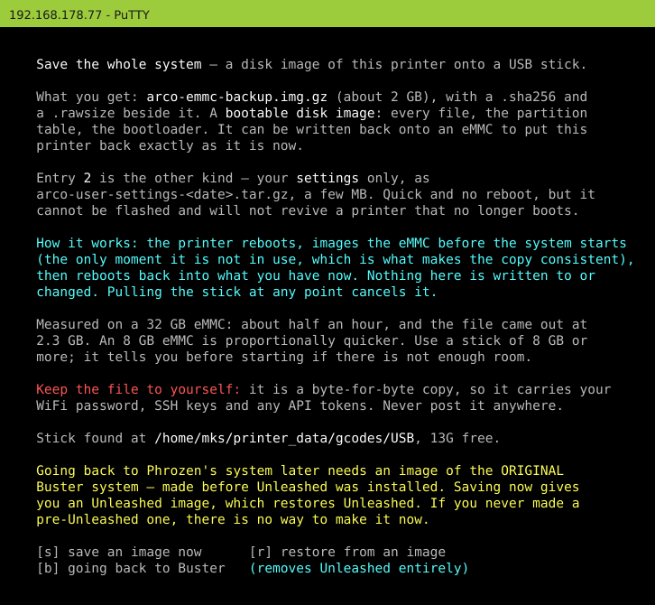
The same screen holds b — going back to Buster, which undoes this project completely and puts Phrozen’s original system back. It needs an image of that original system on the stick, made by you before Unleashed was installed — Phrozen’s firmware zip is not one, that is an update package rather than a system, and once Unleashed is running the original can no longer be copied because it is gone. If you think you may ever want to go back, that image is the thing to make first, in Step 0b.
It is a guided action rather than a note in this manual because of the order. Swapping the eMMC back to Buster is only half of it: the MCU firmware sits on the chips, and a Buster host running Klipper v0.11 will not talk to MCUs left on v0.13 — the printer boots and then cannot find its own hardware. The flasher for those chips needs this system, so it has to run first; do it the other way round and only opening the printer helps. The menu therefore flashes both MCUs back to v0.11, checks that this actually succeeded, and only then arms the eMMC restore. If a flash fails it stops there and changes nothing else — that is the safe outcome, and the printer still works.
Before any of it you are told what disappears — Klipper v0.13, the
self-heal guards, sensorless homing, the AddOn macros, Fluidd, the
theme, the WiFi portal and this backup feature itself — asked to confirm
that the chosen image really predates Unleashed, and finally asked to
type REMOVE UNLEASHED in full. Your
prints, Orca profiles and AMS are unaffected: this is about the
printer’s system, not your files. Nothing is undone by pressing ENTER at
the wrong moment.
a — AMS / Chroma Kit on·off. If you own an AMS,
this is not optional. Every image ships with the AMS
switched off, and that is deliberate: most printers do
not have one, and a printer that opens an AMS serial port with nothing
on the other end waits, retries and reports errors for something the
owner never attached. So printer.cfg ships
[phrozen_dev] auto_connect: false, and the tool commands
T1 to T15 are removed from Klipper’s command
table until you say otherwise.
The consequence is easy to misread as a fault: with the AMS physically connected but never switched on, the spools simply do not turn. Nothing is broken and nothing needs repairing — the printer has not been told the unit is there. Switch it on once, from the menu or from the Mainsail console:
AMS_ONIt homes first (deliberately — the following move goes to the spit
area), sets auto_connect: true, raises the ams
flag that the Orca start G-code reads, brings
T1–T15 back without a restart, and connects.
AMS_OFF reverses all of it. AMS_STATUS shows
where you stand. Do this once, whenever you physically
attach or remove the unit — not per print.
If the spools still do not move afterwards, the missing piece is almost always
phrozen_masterfrom Step 0. It exists only on the original printer, no download contains it, and without it AMS detection hangs.AMS_STATUSsays whether it is installed.
3 — Check self-heal guards answers a question you would otherwise have no way to ask: the guards are installed when the image is built, so a printer that has been running for a while may be missing ones the kit has gained since. It compares what is wired against what the kit expects, and offers to fix it.
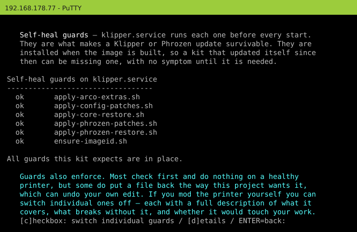
r — Emergency repair is the single action for “something broke and I do not know what”. It does not ask you to diagnose first — every step is check-first and idempotent, so running it on a healthy printer changes nothing — it is described under Updating Klipper and Moonraker further down.
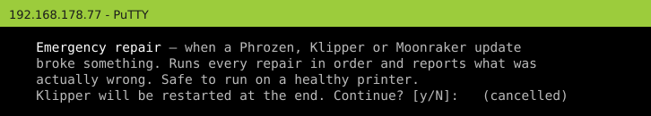
Bed mesh, z-offset, PID, input shaper and purge position are measured per printer, and the image ships none of them — another machine’s numbers are worthless. Nothing here is optional if you want to print. Pick one route; they reach the same place.
Route 1 — factory-reset auto-calibration (easiest). Started from the Arco’s own touch display, in its settings/calibration area. It runs input shaper, bed mesh and purge position back to back and returns to the home screen by itself. Expect it to take a while and to move the toolhead a lot — that is the routine working. Done when it is back at the home screen on its own. (The exact menu path is Phrozen’s own UI and can differ between display firmware versions, so it is not pictured here — look for calibration or factory reset in the display’s settings.)
Route 2 — one routine at a time, from the display’s calibration menu. Same routines, run individually. Use this if one value needs redoing later rather than all of them.
Route 3 — from Mainsail, if you would rather see what is happening:
G28 ; home
SHAPER_CALIBRATE ; input shaper — needs the accelerometer
BED_MESH_CALIBRATE ; bed mesh
PID_BED ; bed PID (macros from AddOn.cfg)
PID_NOZZLE ; nozzle PID
SAVE_CONFIG ; writes the results and restarts KlipperDone when SAVE_CONFIG has restarted
Klipper and Mainsail comes back ready. No z-offset
step: the Arco probes with a load cell, so the Z
reference is found automatically.
🛑 Skip any “print test” the factory reset offers. The bundled test file was compiled for the old Klipper and cannot run on v0.13, so the flow stalls on it. Skipping it costs nothing — your first print comes from OrcaSlicer in Step 9. (Path B readers already met this warning in Step 3; it is repeated here because path A skips that step entirely.)
Now back up what you just measured. Open the setup menu and take 2 — Backup / restore settings, then copy the backup to a USB stick:
bash ~/arco-unleashed/scripts/unleashed_setup.shThe menu calls it “do this once, right after setup” — this is that moment. Your calibration numbers exist from here on, nothing can guess them back, and the local copy lives on the very eMMC it is meant to protect.
That’s the essential install done — the printer runs.
From the setup menu pick
4) AddOn.cfg + Features:
Choose [c]heckbox features to toggle
individual add-ons — space toggles, Tab jumps to
<Ok>:
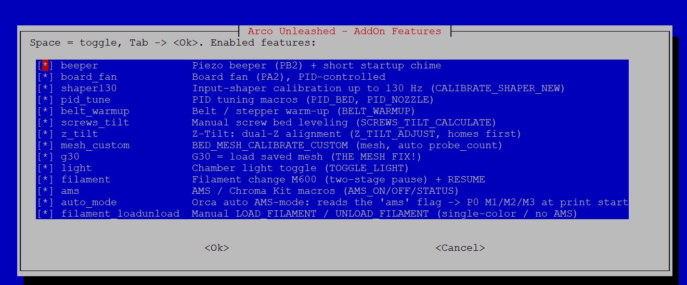
These are the quality-of-life macros: AMS auto-mode, the
G30 mesh fix, Z-tilt / bed-mesh / screw-tilt helpers, M600
filament change, chamber light, PID board-fan, input shaper, piezo
chime. Toggling restarts Klipper and verifies it comes back up (with a
one-click rollback if a config error slips in).
Turning G30 off reverts to Phrozen’s original throwaway-mesh behaviour (the mesh fix is lost) — the menu warns you before it lets you disable it.
Setup menu → b) Beacon probe. Only
relevant if you have physically fitted a Beacon
eddy-current probe in place of Phrozen’s piezo. It switches Z homing to
the probe’s virtual endstop and scans the bed mesh instead of poking it.
The config was contributed by Philippe Humeau
(unPhrozen) from a real conversion; nobody on the Unleashed side has run
it, which is what “experimental” means here.
The toggle is reversible — off restores
printer.cfg exactly and keeps your calibrated
beacon.cfg — and it refuses to change anything unless both
the Beacon module and the probe are present.
⚠️ With a Beacon fitted, do not use the Arco display for anything Z-related — no Z-calibration, no auto-levelling, no mesh from the touchscreen. That flow was written for the piezo probe: it declares Z positions instead of measuring them, and loads a mesh probed against a different Z reference, which can drive Z out of safe bounds. Use Mainsail or Fluidd for homing, probing, mesh and Z-offset. Printing from the display still works normally.
⚠️ Check the
z_positionsorder inbeacon.cfgbefore trustingZ_TILT_ADJUST— it must match the physical Z motors, not the config order. Swapped, z_tilt diverges instead of converging. Verify withSTEPPER_BUZZ STEPPER=stepper_z/stepper_z1and watch which side moves.⚠️ A Phrozen firmware update replaces
printer.cfgand would silently put the piezo config back under a Beacon. The kit re-applies Beacon mode automatically before every Klipper start, but run the menu’s Backup / restore settings step anyway — see the README.
First steps after switching, all in Mainsail/Fluidd:
STEPPER_BUZZ both Z steppers → G28 →
Z_TILT_ADJUST → BEACON_CAL →
BEACON_MESH.
Setup menu → s) Sensorless XY homing. X
and Y stop by detecting motor load (Trinamic StallGuard) instead of by a
microswitch. Z is untouched and keeps its load-cell probe.
This is an alternative, not an upgrade. The microswitches are the default and the recommendation: they stop at the same physical place every time, for free, with nothing to tune. If your switches work, leave this off.
It earns its place in one situation, and it is a good one. X’s microswitch hangs off the toolhead MCU, while the driver’s DIAG line goes to the main MCU — so a broken toolhead cable kills the switch but not the sensorless path. That can get a printer homing again without waiting for a spare part.
Proven on this hardware: G28 X, G28 Y and a
full G28 all home on StallGuard, and the (now electrically
disconnected) switches still click audibly at the end
of the move. That click matters: it means the stall happens at
the mechanical stop, so the zero point does not shift — the filament
cutter at X=319, the wipe position at Y=322 and any saved bed mesh keep
their meaning.
The toggle equalises both homing speeds (levelling down,
never up) because StallGuard’s reading is velocity-dependent, and
installs a small sensorless.cfg that gates StallGuard by
velocity. Without that gate Klipper arms StallGuard at standstill and
every G28 ends in a twitch — which is the single most
confusing failure mode here.
⚠️ Watch the first few homings and keep
M112within reach. If the sensitivity is wrong the carriage grinds into the rail instead of stopping, and on CoreXY it drags the other axis with it. Listen for the switch to click — that is how you know it reached the wall, because Klipper reports position0either way.⚠️ Sensitivity is
driver_SGTin the[tmc5160 stepper_x]/[stepper_y]sections, and the scale is counter-intuitive: LOWER is MORE sensitive. Grinds without stopping → lower it. Stops early with no click → raise it. The shipped value of1is the one proven here at 30 mm/s and 1.2 A.⚠️ Calibrate at your running current. A value found at a reduced current does not transfer: with too little current the motor slips instead of building the load StallGuard measures, and nothing ever triggers.
off restores printer.cfg byte-for-byte,
including the original homing speed. A Phrozen firmware update replaces
printer.cfg and would quietly hand back the switch you may
have switched away from — the kit re-applies sensorless mode before
every Klipper start whenever it is enabled.
Your Arco shipped with two of them, and so does this build. Both talk to the same printer; use whichever you prefer, or both at once.
| URL | ||
|---|---|---|
| Mainsail | http://<printer-ip>/ or
:81 |
:80 is the address the stock Arco uses, so old
bookmarks keep working. :81 is where the migration put it
and stays valid. |
| Fluidd | http://<printer-ip>:8808/ |
Phrozen’s own port for it. Install or update with the setup menu →
4 → [w], or
bash ~/arco-unleashed/scripts/install-fluidd.sh. |
The branded Arco Unleashed theme exists for both (optional).
Mainsail: switch with the SWITCH_THEME macro or
unleashed-theme.sh. Fluidd:
bash ~/arco-unleashed/fluidd-theme/setup-fluidd-theme.sh —
then reload with Ctrl+F5 and pick the
dark theme with Primary Color #2E74F2.
Fluidd has no hook for a custom logo or favicon, so those stay Fluidd’s
own.
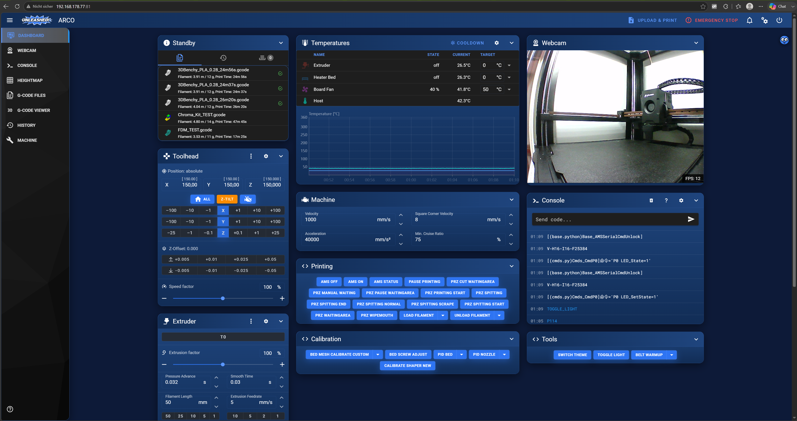
Moonraker updates normally. Nothing in this project touches its source tree, only its config file.
Klipper is not pinned either. It sits on
master with HEAD attached, so the update
manager offers newer versions exactly as it does on any other Klipper
machine. The repository itself is clean and valid —
everything this project adds lives in untracked files, so no tracked
file is modified and nothing is greyed out. Earlier images did pin the
built commit, and that pin came paired with a detached
HEAD, which is what actually cost the update button. Both
are gone.
One thing is worth knowing before you take an update: the phrozen_dev
module is patched for the Klipper API this build ships, so a jump to a
much newer Klipper can need those patches redone. The guards below
re-apply them on every start, but update deliberately rather than by
reflex. If you would rather hold a known-good version,
scripts/pin-klipper-updates.sh does that — it is opt-in,
and nothing on the image does it for you.
Earlier images showed Klipper as invalid with “repo is dirty”, because the MCU timing was patched into the tracked
klippy/mcu.py. That was more than a cosmetic badge: Moonraker refuses to update a dirty repo, so Klipper could never be updated at all. Those three values now come from the untrackedarco_mcu_timingextra instead.
The three recovery actions are not equally harmless:
| Action | What it does | Effect here |
|---|---|---|
| Update | refuses on a modified repo, otherwise pulls | safe |
| Soft recover | resets tracked files; never runs git clean |
safe — untracked files survive |
| Hard recover | git reset --hard + git clean -d -f |
deletes everything untracked,
phrozen_dev included |
On its own that would halt the printer: the config would declare
sections whose modules just vanished. It needs no action from you —
klipper.service runs seven guards before klippy starts,
which reinstall our modules, and a copy of your own
phrozen_dev is kept outside the Klipper tree
(~/.arco-phrozen-backup) precisely for this. Phrozen’s
software is never shipped with this kit, so that copy is made on your
printer, from your own installation.
If something does go wrong, the setup menu’s Emergency repair is the single action to run — it repairs everything it can without needing to know what broke, and tells you what was actually wrong.
To update Klipper — safe, for the same reason:
cd ~/klipper && git checkout master && git pull && sudo systemctl restart klipper
# (Klipper is not pinned by default any more — pin-klipper-updates.sh is only for holding a version)Nothing is lost: every patch is re-applied before klippy loads. Be aware you are then off the version this build was tested against.
Machine → System Loads confirms the whole stack is on the new versions — all three MCUs and the host on Klipper v0.13, OS armbian … bookworm:
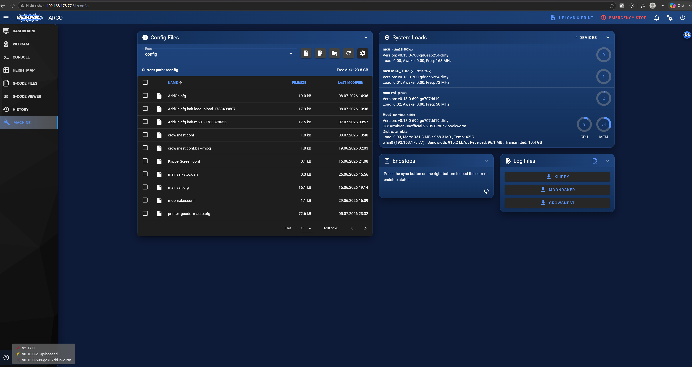
Stock OrcaSlicer already ships the Phrozen Arco
profile (vendor Phrozen). The easiest path is to
import a kit profile via File → Import → Import
Configs… — it inherits from that official preset and changes only
what this kit needs. Two to choose from, in orca/:
| Profile | Bed mesh at print start |
|---|---|
Phrozen Arco 0.4 (Unleashed).json |
G30 — loads the mesh you saved as
phrozen. Instant. |
Phrozen Arco 0.4 (Unleashed, adaptive mesh).json |
probes the print area each print (~30–60 s), leaving your saved mesh untouched |
Import whichever you want; both fill in all four fields below. Label objects, which adaptive meshing needs, is already on in the official Arco print profiles — nothing to tick.
To set the fields by hand instead, open the printer preset with the edit (pencil) icon next to the printer name:
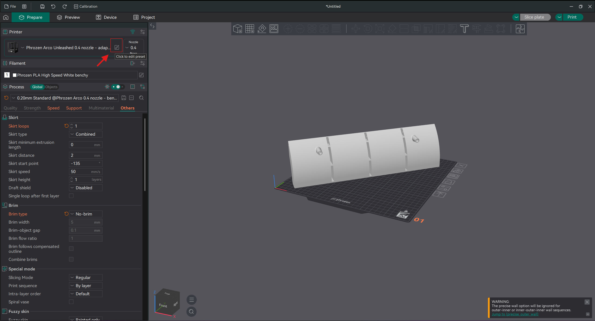
In Printer settings, open the Machine G-code tab — all four fields live here:
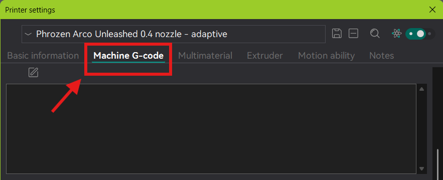
Each field below is given in full, ready to copy. If you imported the kit profile they are already set — this is for setting them by hand, or checking an existing profile against the current version.
Machine start G-code — the kit’s start sequence. Its
last lines are the AMS auto-mode
(PHROZEN_AMS_START picks single / multi / AMS by
itself):
M107
G90
M104 S140 ; nozzle warm-up (stays cool = no ooze during probe)
M140 S[bed_temperature_initial_layer_single] ; bed straight to print temp (no 65C detour)
M109 S140
M190 S[bed_temperature_initial_layer_single] ; heat-soak at target temp
PG28
;AUTO_LEVELING_2
G30
G21
M83
M104 S[nozzle_temperature_initial_layer] ; nozzle up to print temp
M109 S[nozzle_temperature_initial_layer]
{if size(filament_diameter) > 1}PHROZEN_AMS_START MULTI=1{else}PHROZEN_AMS_START MULTI=0{endif}
{if size(filament_diameter) == 1}
T0
{endif}
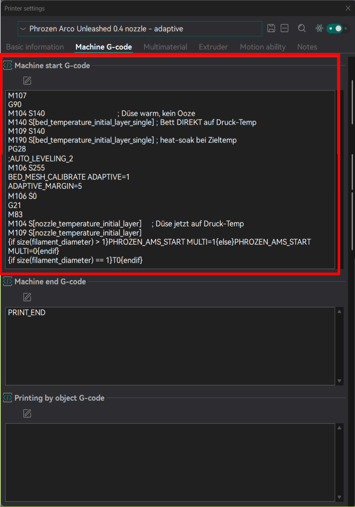
The screenshot shows the optional adaptive bed-mesh variant (probes the print area each print, ~30–60 s). The default block printed here uses
G30, which loads the saved mesh instantly. To switch, replace theG30line with:M106 S255 BED_MESH_CALIBRATE ADAPTIVE=1 ADAPTIVE_MARGIN=5 M106 S0The fan lines keep the nozzle tip clean while probing. Also tick OrcaSlicer’s Label objects checkbox (Others → Label objects) — adaptive meshing reads the object bounding boxes from the
EXCLUDE_OBJECT_DEFINElines that checkbox emits, and without it Klipper silently probes the whole bed, which looks like adaptive meshing not working. Full detail: Adaptive bed mesh in the README.
PHROZEN_AMS_STARTalso arms the filament runout sensor. The toolhead sensor is watched by Phrozen’s own module, but only once a print mode has been set (P0 M1/M2/M3— the macro picks the right one). A start G-code without that line prints with no runout protection at all, and the stock firmware says nothing about it. Unleashed does: you get a console warning a few minutes into such a print, andFILA_STATUSshows the state at any time —Filament: LOADED (adc 0.2134, threshold 0.3630 — below threshold = loaded) Mode: standalone runout Runout protection: ACTIVEThe same values are in
printer['arco_fila_status'], so your own macros can checkprotection_activeandfilament_presenttoo.
Machine end G-code:
PRINT_END
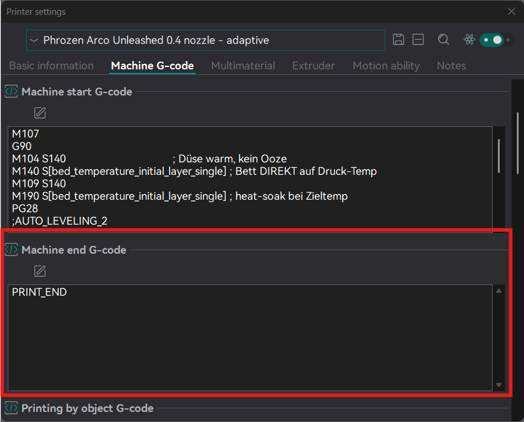
Change filament G-code — the AMS-aware colour
change: with an AMS it retracts and purges the flush volume (a sized
P10 spit); without one it runs the manual M600
change:
PHROZEN_TOOLCHANGE FLUSH=[flush_length]
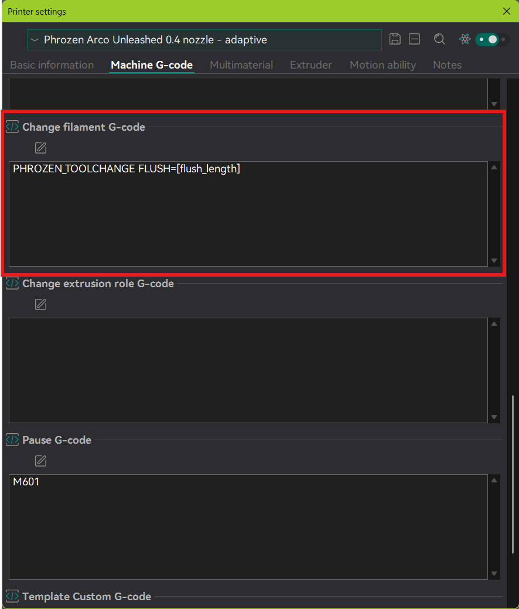
Printing multi-material with an AMS? Add one more parameter:
PHROZEN_TOOLCHANGE FLUSH=[flush_length] TEMP=[new_filament_temp]
TEMPpasses the incoming tool’s nozzle temperature. Without it every colour change after the first re-heats and purges at the temperature the print started with — invisible when all your spools are the same material, but wrong the moment you mix (PETG purged at PLA temperature jams; PLA held at PETG temperature strings and cooks).It is safe to add permanently: with a single material it changes nothing, and it is simply ignored unless the optional Unleashed × KAOS add-on is installed. So one profile covers every case and you never need to re-slice when switching.
Give your filament presets their real nozzle temperatures — that is what
TEMPreads.
Pause G-code — the kit maps M601 to
Klipper’s PAUSE alias:
M601
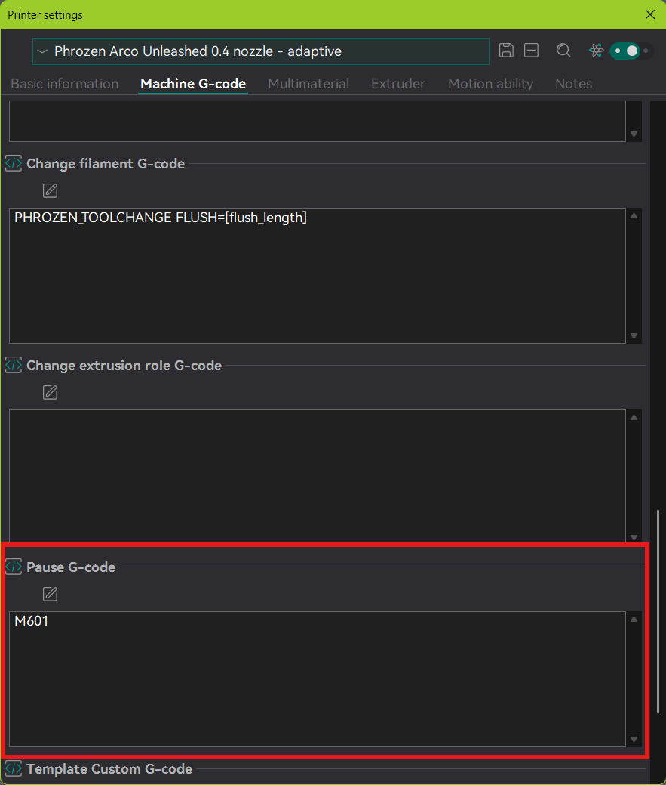
Finally, under Others → G-code output, tick Label objects — required for the adaptive bed mesh (per-object bounding boxes) and Mainsail per-object exclusion:
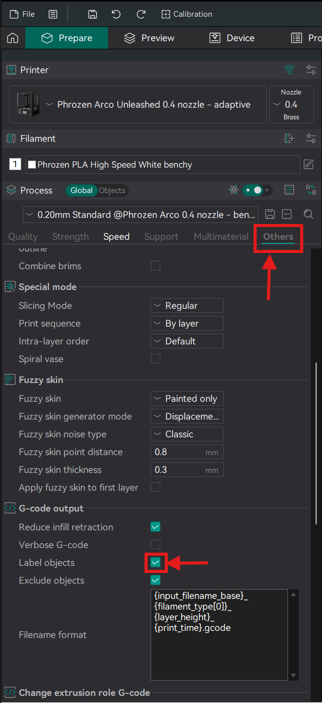
Finally, set the AMS flag on/off once to match
whether an AMS is attached — either from the SSH setup
menu, or with one click in Mainsail’s Macros
panel (AMS ON / AMS OFF, and
AMS STATUS to check):
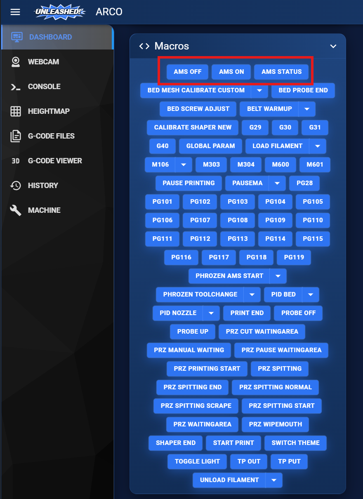
Orca then prints in the right mode automatically.
KAOS (Klipper Add-On System) is a separate, third-party add-on for the Arco by sanders.chris (gitlab.com/sanders.chris/phrozenarco) — a popup menu, fan/light/logging control, safety guards, and a rewritten multicolour purge. It is not part of this kit, is not installed by default, and nothing here depends on it. This step is entirely optional.
KAOS and Arco Unleashed are sibling forks of the same ancestor, our neighbouring repository solutionphil/PhrozenArco, which KAOS extended massively into what it is today. That shared parentage is why a bridge is needed at all: the two are not strangers, so they declare the same inherited Klipper sections, and simply dropping KAOS next to an Unleashed config makes klippy refuse to start. It is also why the fix is tractable — an ownership split rather than a rewrite.
Unleashed × KAOS is our bridge that installs KAOS next to Unleashed instead of over it, so both survive and you can switch it off again cleanly.
It also makes installing KAOS considerably simpler.
KAOS’s own route is a Phrozen firmware package: download a
.zip, unpack it on a PC, copy the nested
phrozen_dev/ folder to a USB stick, plug
it into the printer, run the Phrozen update flow, then power-cycle. With
the bridge, none of that applies — no USB stick, no firmware
package, no unpacking. You type KAOS_ON in the web
console, and it fetches KAOS straight from the project’s repository (~3
MB), verifies it against your configuration, and installs it. Updating
later is one command, KAOS_UPDATE.
🛑 Never install or update KAOS the normal way on Unleashed
Do not use KAOS’s USB-stick packages (
Arco_FW_V199_KAOS_*.zip) or the printer’s Phrozen update flow to install or update it here. UseKAOS_ON/KAOS_UPDATEinstead — always.Those packages are built as Phrozen firmware for the stock printer — the old Debian Buster system with its older Klipper — and they are installed by the Phrozen updater, which replaces
printer.cfg,printer_gcode_macro.cfgand the wholephrozen_dev/folder. On Unleashed (Debian Bookworm, Klipper v0.13) that removes[include AddOn.cfg]and with it every feature of this kit, and drops in files meant for a different operating system and Klipper version. The result is a printer that will not start correctly — and unlikeKAOS_OFF, there is no clean way back.The same applies to KAOS’s System Prep helpers: they tune the stock Buster system (one of them is literally
fix-buster-apt-sources.sh) and would work against Unleashed’s own tuning. The bridge deliberately never installs them.If you already run KAOS on a stock printer and are moving to Unleashed: flash the image as usual, then add KAOS again with
KAOS_ON. Flashing wipes the printer, so your KAOS settings start at their defaults again — note down any you have changed before you flash.
The image ships it: the bridge lives in
~/arco-unleashed/unleashed-x-kaos, its console commands are
registered, and its boot guard is in place. None of KAOS itself
is in the image — only our bridge, which does nothing at all
until you ask it to. There is no root step, no USB stick and no download
to prepare.
So Step 10 is one command, below. (If you ever want to remove even
the bridge, or need to undo a half-finished switch by hand,
~/arco-unleashed/unleashed-x-kaos/docs/removal.md is the
complete list.)
From the Mainsail/Fluidd console — each restarts Klipper and refuses to run mid-print:
| Command | What it does |
|---|---|
KAOS_ON |
downloads KAOS (~3 MB, needs network the first time), verifies it, installs and activates |
KAOS_OFF |
deactivates; files stay cached so KAOS_ON is instant
and offline afterwards |
KAOS_UPDATE |
pulls the latest version and re-activates if it was on |
KAOS_STATUS |
what is installed, which version, active or not |
KAOS_OFF returns the printer
byte-for-byte to its pre-KAOS state. If you ever need
to remove it by hand, follow
~/arco-unleashed/unleashed-x-kaos/docs/removal.md — the
order matters.
Once active, type in the console:
KAOS_MENUA popup menu opens in Mainsail/Fluidd with the KAOS settings (lights, sound, fans, logging/language, safety, print features). If your interface does not show popups, use the plain-text version instead:
KAOS_MENU_TEXTOther commands you can type directly:
KAOS_LIGHTS_TOGGLE, KAOS_FILAMENT_LOAD /
KAOS_FILAMENT_UNLOAD, KAOS_PAUSE /
KAOS_RESUME, KAOS_HEALTH_CHECK.
KAOS includes magic_ams, which replaces the Arco’s
proven firmware purge with a slicer-driven one (split into portions with
a cooling kick between). With KAOS_ON and
the AMS flag on, that is what runs on every colour change — the same
behaviour KAOS users get upstream, where it cannot be switched off at
all.
Two things to know:
Add TEMP=[new_filament_temp] to
your Change filament G-code (see Step 9) — magic_ams uses it
for per-tool temperature, which is what makes multi-material
printing correct.
You can step back without removing KAOS. In the console:
| Command | Effect |
|---|---|
MAGIC_AMS_STAGE STAGE=1 |
keeps the proven purge, but still fixes per-tool temperature — takes effect immediately, no restart |
MAGIC_AMS_OFF |
removes the purge rewrite entirely, rest of KAOS stays |
MAGIC_AMS_STATUS |
shows what is active |
Worth doing a short two-colour test print the first time, and watching the first colour change.
With no AMS attached (ams = 0)
magic_ams stays inert — colour changes fall back to the manual
M600 exactly as without KAOS.
Every entry below is something that actually happened — on the development printer or to someone testing this kit. They are grouped by when you see them, because the same words on screen mean different things at different stages.
“sha256 MISMATCH” — refusing to flash The image on
the stick is not the image the checksum describes. In practice the
download is almost never the problem, the stick is. In order: 1. Take
the stick off any USB hub and plug it straight into the
printer. A hub is the single most common reason a file copies fine and
reads back different. 2. Copy the image again and eject the stick
properly before unplugging it — Windows may still be flushing its cache
when you pull it. 3. Check the copy on your PC:
certutil -hashfile <image> SHA256 (Windows) or
sha256sum -c <image>.sha256 (Linux). If the PC copy
is already wrong, download it again. 4. If the log also shows
CRC or I/O errors, stop swapping settings — that stick
is failing, or is one this printer cannot drive. Use a different one,
preferably a plain USB 2.0 stick.
Nothing happens on reboot — the old system just
boots The flasher only fires when it finds the armed image on
the stick. Check the stick is in, that the image is at the top level
(not in a folder), and that its name still matches. It stays armed, so
correcting the stick and power-cycling is the retry.
arco-selfflash.log on the stick says what it looked
for.
The display says “Write incomplete” or “Verify FAILED — do
not trust this eMMC” Do not power-cycle repeatedly. Pull the
stick and power-cycle once: - It boots
→ the write was fine and a check misfired. Confirm with
cat ~/arco-unleashed/.kit-commit — if it shows the version
you flashed, the eMMC has it. - It does not boot → the
write really was incomplete. That needs path B: open the printer, take
the eMMC out and write it on a PC. Your backup on the stick is
unaffected.
The stick is in, but the printer does not see it It
auto-mounts at ~/printer_data/gcodes/USB. If that folder is
empty, find the partition with lsblk and mount it
to that same path — the tools look there by name:
sudo mkdir -p /home/mks/printer_data/gcodes/USB
sudo mount /dev/sda1 /home/mks/printer_data/gcodes/USBMore than one image on the stick The tools match by
pattern (Arco-Unleashed*.img.gz,
Arco_FW_V*.zip) and take the first match,
so an older firmware zip or a (1) re-download can win
silently and install something you did not intend. The flasher warns
when it sees more than one — start from an empty stick and put only the
listed files on it.
The adapter shows no drive, or Etcher cannot see it
Seat the module fully — it is easy to have it in the socket but not
contacted — and try a different USB port, directly on the PC rather than
through a hub. The eMMC is a .img.gz; Etcher handles the
decompression itself, so do not unpack it first.
Flashed fine, but the printer does not come up Check the module is the right way round and its retaining screws are in. If the printer still does not boot and the eMMC is definitely written, the MCUs are the other half — a printer whose host was replaced but whose MCUs still carry factory firmware cannot start Klipper. That is Step 5.
“Notice — Error occurred” on the display Expected, and not a fault. Klipper cannot start until the MCUs are flashed (Step 5), so the display has nothing to show. Restarting or power-cycling will not clear it. Do not set anything up on the display; wait for the screen to settle, which is how you know the automatic restarts have finished.
The printer never appears on the network Put a
wifi-seed.txt on the stick (SSID= /
PSK= / COUNTRY=, plain text, no quotes, 2.4
GHz — the Arco has no 5 GHz radio) and power-cycle. Each seed is used
once, by its content: writing out an identical file
changes nothing, so a retry needs details that actually differ. If the
details were right and it still did not join, use the setup portal
instead — join the Arco-Unleashed-Setup network from a
phone.
The display module was not installed — “no internet and no USB package” The first boot fetches Phrozen’s display module from Phrozen’s own repository, and that did not work. The usual cause is a network that hands out an address but has no route to the internet, which the Wi-Fi check cannot tell apart from a working one. Nothing is lost and nothing is disabled: the printer tries again on the next boot, so either give it real internet and reboot, or take the offline route:
Arco_FW_V*.zip from Phrozen’s
websitebash ~/arco-unleashed/scripts/fetch-phrozen-fw.shThe zip always takes priority over the download, so this also works on a printer that does have internet — and it is the only route that brings PhrozenGo.
The download was refused with “CHECKSUM MISMATCH” The module that arrived is not the build this kit pins, so it was not installed — deliberately, since the display binary has to match the firmware on the panel. Retry once in case the transfer was truncated; a captive portal on the network is the other common cause. If it keeps happening, use the USB route above and open an issue: it means Phrozen moved the pinned commit.
The toolhead flash ends with “FlashError” although the output looked complete Tap RESET on the toolhead board once, then re-run the step. The chip reads its BOOT pin the instant RESET is released and then stays in the bootloader; a tap is sometimes what it takes for the host to see it again. There is no timing window to hit — hold BOOT, tap RESET, release BOOT.
flash_mcus.sh cannot find the toolhead at
all Check the front cover’s fan is unplugged and the printer is
switched on — the flash itself needs power. Only
removing the covers happens with the printer off.
A fix that the changelog promises has not taken
effect Config repairs are applied by a guard that runs when the
klipper service starts. Klipper’s own
RESTART and FIRMWARE_RESTART do
not run it:
sudo systemctl restart klipperA new self-heal guard is not active Guards are systemd drop-ins, and a kit update ships the scripts without rewiring them. Menu 3 — Check self-heal guards compares what is wired against what the kit expects and offers to fix it, or:
sudo bash ~/arco-unleashed/scripts/optimize-boot.shIt is idempotent — on an up-to-date printer it changes nothing.
Obico disappeared after a Phrozen firmware update
Phrozen’s own start scripts delete moonraker-obico on every
boot, and disabling PhrozenGo works by commenting those lines out —
inside Phrozen’s module. Anything that replaces that module brings the
original lines back. Reinstall Obico, then open 5 — PhrozenGo /
Cloud and disable PhrozenGo again: that records the choice
outside the module, and from then on it is restored automatically before
every start.
update-from-usb.sh says “Permission denied” and
then “bad or truncated tarball” The tarball is fine. The script
was started from a copy outside the kit (/tmp/scripts/…)
and tried to work in the wrong place. Current versions detect this and
update the installed kit anyway; if yours does not, run it from the kit
itself:
bash ~/arco-unleashed/scripts/update-from-usb.shThe printer starts a backup by itself after a restore A backup image contains whatever was armed when it was taken, and restoring it brings that back. Current versions make the arming one-shot, so it lands harmlessly. An image taken before that fix still expects a marker file — create it on the stick before restoring such an image:
touch ~/printer_data/gcodes/USB/.arco-backup-doneWhich backup file is the good one The name tells you
which system it holds — -stock is Phrozen’s,
-unleashed is this one — and the restore menu spells that
out beside each candidate. Beyond that, the sidecars are written last,
on purpose: a .img.gz without its
.sha256 and .rawsize is an interrupted run,
whatever its size. To check a complete one in a second, without reading
the whole file:
cd ~/printer_data/gcodes/USB && sha256sum -c arco-emmc-backup-*.img.gz.sha256“This image does not fit the eMMC in this printer” The backup came from a machine with a larger eMMC — a 32 GB image cannot be written to an 8 GB one. The comparison is against the image’s uncompressed size, which is why a 2 GB file can be refused.
A print ends with
bed_mesh: Unknown profile [phrozen] and the display shows
an error The printer has never saved a mesh under that name —
the image ships no calibration on purpose, because another machine’s
numbers are worthless. Current versions make this harmless. To fix it
properly, calibrate once:
G28
BED_MESH_CALIBRATE PROFILE=phrozen
SAVE_CONFIGThe printer halts after a Klipper or Moonraker update,
display dead Moonraker’s “hard recover” runs
git reset --hard plus git clean, which deletes
every untracked file in the Klipper tree — phrozen_dev
among them. printer.cfg declares it, so klippy refuses the
config outright. That is what r — Emergency repair in
the setup menu is for: seven steps, no diagnosis needed, and it restores
the module from the safety copy the kit keeps outside the tree.
AMS messages every few minutes although no AMS is
attached Phrozen’s cloud component polls on a timer. Set AMS
off once in the setup menu (a) — the kit
then swallows that poll instead of letting it fill the console.
“Timer too close” during calibration or a fast print
The real-time tuning is what keeps this machine stable at high
acceleration: performance governor, CPU affinity, IRQ pinning, and the
MCU timing declaration. If they are not all in place the step queue
starves at a burst start. Menu 3 — Check self-heal
guards tells you what is missing, and
optimize-boot.sh puts it back. Do not run anything heavy on
the printer during a calibration.
Belt tension readings disagree with each other
Measure where both spans are equal —
BELT_TENSION parks there, and it is neither the middle of
the bed nor the middle of the travel. Leave the steppers energised:
M84 lets the belts go slack and the reading is void. Aim
for equal pitch between the two belts, not for any particular
frequency.
The cutter position calibration stops dead at X 0.0 — and other travel refused after homing Only with the KAOS add-on, and the rule that fixes it is one line long: home the printer fully once, then calibrate.
KAOS refuses every travel until a home has physically established
where the toolhead is. Klipper’s own homed_axes is not
evidence of that on this machine — the display routinely writes a
position with SET_KINEMATIC_POSITION instead of measuring
one, which makes Klipper believe it is homed when nothing has moved.
That is the whole reason the guard keeps its own record.
The display’s cutter calibration never homes. Its very first action
is to lift Z, before any homing at all, and that lift is what gets
refused — so the screen sits at 0.0 having done nothing. It is not a
crash and nothing is broken. A full G28 beforehand
satisfies the guard, and KAOS then stands down for the rest of the
session.
Watch the end of the calibration. It finishes with
SAVE_CONFIG, which restarts Klipper — and a restart clears
the trust again. Calibrating twice in a row therefore needs a
G28 in between. The same applies after
KAOS_ON, after a firmware restart, and after any print that
ends in SAVE_CONFIG.
If a home does not help. Then the trust wiring
itself is incomplete, which is a different fault. Menu 3 — Check
self-heal guards says so under “Unleashed x KAOS trust chain” —
it reports ok when either KAOS’s own
[homing_override] or the post-home hook is in place, and
names the repair when neither is. That state arises on printers set up
before the bridge could install it, or after a Phrozen firmware update
replaces printer.cfg. Bringing the bridge up to date and
restarting the klipper service repairs it:
bash ~/arco-unleashed/scripts/unleashed_setup.shsudo systemctl restart klipperthen G28 once. Klipper’s own RESTART does
not run the guard that performs the repair.
Every command is rejected and RESTART does not
help An MCU shutdown latches: RESTART
restarts only the host side, so the latch outlives it and each new
command is answered with the original shutdown message.
FIRMWARE_RESTART is what clears it. When you then read the
log, trust the first error and ignore what follows —
everything after a shutdown is a consequence of it, not a second
fault.
FIRMWARE_RESTARTHow do I update the kit itself? Type
ARCO_UPDATE in the Mainsail or Fluidd console.
ARCO_UPDATE_CHECK looks first and changes nothing. The kit
shipped in the image is a flat copy of the repository rather than a
clone, so the first ARCO_UPDATE adopts it — your files stay
exactly as they are, git is simply told where they came from — and
updates in the same run. If anything in the printer configuration
changed, it takes effect when the klipper service
restarts (sudo systemctl restart klipper); Klipper’s own
RESTART does not run the self-heal guards. Offline, or from
a USB stick, the other route is update-from-usb.sh with a
kit tarball — that one needs no network at all.
I already imaged my eMMC on a PC. Can I use that file here?
Yes, with three small preparations. The flasher wants a compressed image with two sidecars beside it, because that is what it can verify before it writes anything:
arco-emmc-backup-stock.img.gz |
the image, gzipped — a raw .img is not
read |
…img.gz.sha256 |
the checksum of the .gz. Without it the flasher refuses |
…img.gz.rawsize |
the uncompressed byte count. Optional, but it is what lets the flasher reject an image too big for this eMMC, and what drives the progress bar |
The file name is not free. The restore menu looks
for a fixed set of names, so a file called anything else will simply not
appear in it. Use exactly arco-emmc-backup-stock.img.gz for
an image of Phrozen’s system — the -stock part is also what
keeps a later Unleashed backup from rotating it away, and what the menu
reads to label it for you.
On Windows this needs no extra software — PowerShell can do all three. Open PowerShell and paste:
$img = "D:\YOUR_IMAGE_NAME.img" # what you read off the eMMC
$dst = "F:\arco-emmc-backup-stock.img.gz" # only F: changes — keep the file name
$in = [IO.File]::OpenRead($img); $out = [IO.File]::Create($dst)
$gz = New-Object IO.Compression.GZipStream($out, [IO.Compression.CompressionMode]::Compress)
$in.CopyTo($gz); $gz.Close(); $out.Close(); $in.Close()
(Get-Item $img).Length | Set-Content -Encoding ascii -NoNewline "$dst.rawsize"
"$((Get-FileHash $dst -Algorithm SHA256).Hash.ToLower()) $(Split-Path $dst -Leaf)" |
Set-Content -Encoding ascii -NoNewline "$dst.sha256"The two drive letters are examples — but only the letters.
$imgis entirely yours: point it at the raw file you read off the eMMC, whatever it is called and wherever you saved it. In$dst, change onlyF:to whatever letter Windows gave your stick. The file namearco-emmc-backup-stock.img.gzmust stay exactly as written, or the restore menu will not list it.
Expect it to take a while — several minutes per gigabyte, with no
output until it finishes. If you happen to have 7-Zip,
7z a -tgzip -mx=1 "$dst" "$img" replaces the three middle
lines and is quicker; the two sidecar lines are still needed either
way.
Why must it be under 4 GB?
FAT32 cannot hold a single file of 4 GiB or more. That is a per-file limit, not a limit on the stick — a 64 GB stick is fine, one 4 GiB file on it is not. So a raw 8 GB image can never sit on the stick at all; compressed it normally lands at 2–2.5 GB, unless the eMMC’s free space is full of deleted data, which does not compress.
Reformatting to exFAT or NTFS does not help: the
small system that performs the flash runs before Linux is up and can
only mount FAT32. If your image will not go below 4 GiB, use
path B instead — write the raw .img
straight to the eMMC on your PC, no stick involved.
balenaEtcher does not create images, it only writes
them. To read one off an eMMC use Win32DiskImager’s Read, or
dd on Linux/macOS. Or skip all of this and let the printer
do it: Step
0b writes the image and both sidecars itself, and reads the result
back off the stick to prove it is good.